pacman::p_load(spdep, tmap, sf, ClustGeo,
ggpubr, cluster, factoextra, NbClust,
heatmaply, corrplot, psych, tidyverse, GGally)Hands on Exercise 6
Overview
In geobusiness and spatial policy, it is a common practice to delineate the market or planning area into homogeneous regions by using multivariate data.
Because every single area is unique, so many different types of data needs to be collected and analysed at once to get an accurate look at the full picture and make better decisions and policies in the relevant planning or markets.
Getting Started!
In this exercise, we will delineate Shan State, Myanmar into homogeneous regions by using multiple Information and Communication technology (ICT) measures, namely: Radio, Television, Land line phone, Mobile phone, Computer, and Internet at home.
Data
Two data sets will be used in this study. They are:
Myanmar Township Boundary Data (i.e. myanmar_township_boundaries) : This is a GIS data in ESRI shapefile format. It consists of township boundary information of Myanmar. The spatial data are captured in polygon features.
Shan-ICT.csv: This is an extract of The 2014 Myanmar Population and Housing Census Myanmar at the township level.
Importing of Data
First we load the required libraries :
The R packages needed for this exercise are as follows:
Spatial data handling
- sf, rgdal and spdep
Attribute data handling
- tidyverse, especially readr, ggplot2 and dplyr
Choropleth mapping
- tmap
Multivariate data visualisation and analysis
- coorplot, ggpubr, and heatmaply
Cluster analysis
cluster
ClustGeo
Shapefile data
import Myanmar Township Boundary GIS data and its associated attrbiute table into R environment.
The Myanmar Township Boundary GIS data is in ESRI shapefile format. It will be imported into R environment by using the st_read() function of sf.
The code chunks used are shown below:
shan_sf <- st_read(dsn = "data/geospatial/Myanmar",
layer = "mmr_polbnda_adm3_250k_mimu_1") %>%
filter(ST %in% c("Shan (East)", "Shan (North)", "Shan (South)")) %>%
select(c(1:6))Reading layer `mmr_polbnda_adm3_250k_mimu_1' from data source
`C:\cjmheidii\ISSS626 - Geospatial\Hands-on_Ex\data\geospatial\Myanmar'
using driver `ESRI Shapefile'
Simple feature collection with 330 features and 8 fields
Geometry type: MULTIPOLYGON
Dimension: XY
Bounding box: xmin: 92.1721 ymin: 9.605884 xmax: 101.17 ymax: 28.54554
Geodetic CRS: WGS 84shan_sfSimple feature collection with 55 features and 6 fields
Geometry type: MULTIPOLYGON
Dimension: XY
Bounding box: xmin: 96.15107 ymin: 19.29932 xmax: 101.17 ymax: 24.15907
Geodetic CRS: WGS 84
First 10 features:
ST ST_PCODE DT DT_PCODE TS TS_PCODE
1 Shan (East) MMR016 Kengtung MMR016D001 Mongla MMR016005
2 Shan (East) MMR016 Kengtung MMR016D001 Mongping MMR016007
3 Shan (East) MMR016 Kengtung MMR016D001 Mongyang MMR016003
4 Shan (East) MMR016 Monghsat MMR016D002 Monghsat MMR016006
5 Shan (East) MMR016 Monghsat MMR016D002 Mongton MMR016008
6 Shan (East) MMR016 Tachileik MMR016D003 Monghpyak MMR016010
7 Shan (East) MMR016 Tachileik MMR016D003 Mongyawng MMR016011
8 Shan (East) MMR016 Tachileik MMR016D003 Tachileik MMR016009
9 Shan (North) MMR015 Hopang MMR015D006 Hopang MMR015021
10 Shan (North) MMR015 Hopang MMR015D006 Mongmao MMR015008
geometry
1 MULTIPOLYGON (((99.97483 21...
2 MULTIPOLYGON (((98.96995 21...
3 MULTIPOLYGON (((99.12083 22...
4 MULTIPOLYGON (((99.6198 20....
5 MULTIPOLYGON (((99.15988 20...
6 MULTIPOLYGON (((100.1487 20...
7 MULTIPOLYGON (((100.1693 21...
8 MULTIPOLYGON (((100.5454 21...
9 MULTIPOLYGON (((98.52686 22...
10 MULTIPOLYGON (((98.88605 23...
Note
sf.data.frame is conformed to Hardy Wickham’s tidy framework.
Since shan_sf is conformed to tidy framework, we can also glimpse() to reveal the data type of it’s fields.
glimpse(shan_sf)Rows: 55
Columns: 7
$ ST <chr> "Shan (East)", "Shan (East)", "Shan (East)", "Shan (East)", "…
$ ST_PCODE <chr> "MMR016", "MMR016", "MMR016", "MMR016", "MMR016", "MMR016", "…
$ DT <chr> "Kengtung", "Kengtung", "Kengtung", "Monghsat", "Monghsat", "…
$ DT_PCODE <chr> "MMR016D001", "MMR016D001", "MMR016D001", "MMR016D002", "MMR0…
$ TS <chr> "Mongla", "Mongping", "Mongyang", "Monghsat", "Mongton", "Mon…
$ TS_PCODE <chr> "MMR016005", "MMR016007", "MMR016003", "MMR016006", "MMR01600…
$ geometry <MULTIPOLYGON [°]> MULTIPOLYGON (((99.97483 21..., MULTIPOLYGON (((…Shan-ICT csv
ict <- read_csv("data/aspatial/Shan-ICT.csv")Lets look at the summary of this dataset!
summary(ict) District Pcode District Name Township Pcode Township Name
Length :55 Length :55 Length :55 Length :55
N.unique :14 N.unique :14 N.unique :55 N.unique :55
N.blank : 0 N.blank : 0 N.blank : 0 N.blank : 0
Min.nchar:10 Min.nchar: 4 Min.nchar: 9 Min.nchar: 4
Max.nchar:10 Max.nchar: 9 Max.nchar: 9 Max.nchar:10
Total households Radio Television Land line phone
Min. : 3318 Min. : 115 Min. : 728 Min. : 20.0
1st Qu.: 8711 1st Qu.: 1260 1st Qu.: 3744 1st Qu.: 266.5
Median :13685 Median : 2497 Median : 6117 Median : 695.0
Mean :18369 Mean : 4487 Mean :10183 Mean : 929.9
3rd Qu.:23471 3rd Qu.: 6192 3rd Qu.:13906 3rd Qu.:1082.5
Max. :82604 Max. :30176 Max. :62388 Max. :6736.0
Mobile phone Computer Internet at home
Min. : 150 Min. : 20.0 Min. : 8.0
1st Qu.: 2037 1st Qu.: 121.0 1st Qu.: 88.0
Median : 3559 Median : 244.0 Median : 316.0
Mean : 6470 Mean : 575.5 Mean : 760.2
3rd Qu.: 7177 3rd Qu.: 507.0 3rd Qu.: 630.5
Max. :48461 Max. :6705.0 Max. :9746.0 There are a total of eleven fields and 55 observation in the tibble data.frame. There are also no blank rows within the data which is good for our data analysis.
Deriving of new Variables
The unit of measurement of the values are number of household in this scenario since we are looking at household population. Using these values directly will be bias by the underlying total number of households. In general, the townships with relatively higher total number of households will also have higher number of households owning radio, TV, etc
Using the dplyr package, we will derive the penetration rate of each ICT variable.
ict_derived <- ict %>%
mutate(`RADIO_PR` = `Radio`/`Total households`*1000) %>%
mutate(`TV_PR` = `Television`/`Total households`*1000) %>%
mutate(`LLPHONE_PR` = `Land line phone`/`Total households`*1000) %>%
mutate(`MPHONE_PR` = `Mobile phone`/`Total households`*1000) %>%
mutate(`COMPUTER_PR` = `Computer`/`Total households`*1000) %>%
mutate(`INTERNET_PR` = `Internet at home`/`Total households`*1000) %>%
rename(`DT_PCODE` =`District Pcode`,`DT`=`District Name`,
`TS_PCODE`=`Township Pcode`, `TS`=`Township Name`,
`TT_HOUSEHOLDS`=`Total households`,
`RADIO`=`Radio`, `TV`=`Television`,
`LLPHONE`=`Land line phone`, `MPHONE`=`Mobile phone`,
`COMPUTER`=`Computer`, `INTERNET`=`Internet at home`) It is always important to verify the output after each data engineering/manipulation to ensure that the data is engineered the way as we expected it! It will be done using the code below.
summary(ict_derived) DT_PCODE DT TS_PCODE TS TT_HOUSEHOLDS
Length :55 Length :55 Length :55 Length :55 Min. : 3318
N.unique :14 N.unique :14 N.unique :55 N.unique :55 1st Qu.: 8711
N.blank : 0 N.blank : 0 N.blank : 0 N.blank : 0 Median :13685
Min.nchar:10 Min.nchar: 4 Min.nchar: 9 Min.nchar: 4 Mean :18369
Max.nchar:10 Max.nchar: 9 Max.nchar: 9 Max.nchar:10 3rd Qu.:23471
Max. :82604
RADIO TV LLPHONE MPHONE
Min. : 115 Min. : 728 Min. : 20.0 Min. : 150
1st Qu.: 1260 1st Qu.: 3744 1st Qu.: 266.5 1st Qu.: 2037
Median : 2497 Median : 6117 Median : 695.0 Median : 3559
Mean : 4487 Mean :10183 Mean : 929.9 Mean : 6470
3rd Qu.: 6192 3rd Qu.:13906 3rd Qu.:1082.5 3rd Qu.: 7177
Max. :30176 Max. :62388 Max. :6736.0 Max. :48461
COMPUTER INTERNET RADIO_PR TV_PR
Min. : 20.0 Min. : 8.0 Min. : 21.05 Min. :116.0
1st Qu.: 121.0 1st Qu.: 88.0 1st Qu.:138.95 1st Qu.:450.2
Median : 244.0 Median : 316.0 Median :210.95 Median :517.2
Mean : 575.5 Mean : 760.2 Mean :215.68 Mean :509.5
3rd Qu.: 507.0 3rd Qu.: 630.5 3rd Qu.:268.07 3rd Qu.:606.4
Max. :6705.0 Max. :9746.0 Max. :484.52 Max. :842.5
LLPHONE_PR MPHONE_PR COMPUTER_PR INTERNET_PR
Min. : 2.78 Min. : 36.42 Min. : 3.278 Min. : 1.041
1st Qu.: 22.84 1st Qu.:190.14 1st Qu.:11.832 1st Qu.: 8.617
Median : 37.59 Median :305.27 Median :18.970 Median : 22.829
Mean : 51.09 Mean :314.05 Mean :24.393 Mean : 30.644
3rd Qu.: 69.72 3rd Qu.:428.43 3rd Qu.:29.897 3rd Qu.: 41.281
Max. :181.49 Max. :735.43 Max. :92.402 Max. :117.985
Note
Notice that six new fields have been added into the data.frame. They are RADIO_PR, TV_PR, LLPHONE_PR, MPHONE_PR, COMPUTER_PR, and INTERNET_PR.
Exploratory Data Analysis (EDA)
EDA using statistical graphics
We can plot the distribution of the variables (i.e. Number of households with radio) by using appropriate Exploratory Data Analysis (EDA) as shown in the code chunk below.
Histogram is useful to identify the overall distribution of the data values (i.e. left skew, right skew or normal distribution)
ggplot(data=ict_derived,
aes(x=`RADIO`)) +
geom_histogram(bins=20,
color="black",
fill="light blue")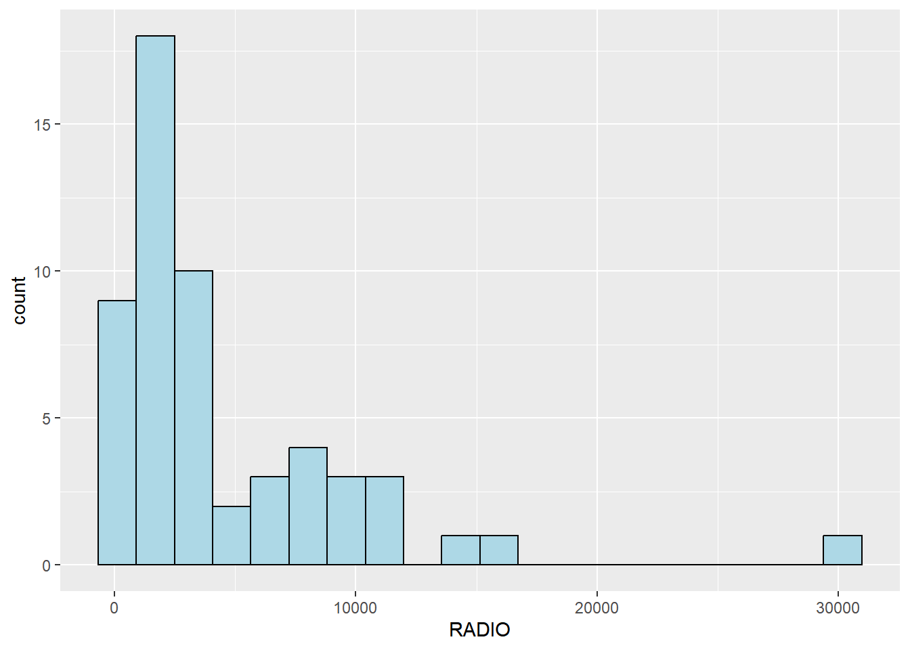
Note
Analysis :
From the RADIO variable, most of the values (18 values) are within the lower values of 1000-2500, though there are several values that are skewing the data that is above 12000. It would be better however to use the median and interquartile range to summarise the spread of the data since the histogram can mainly show the general outline and distribution of data itself
Box plots are useful to detect outliers!
ggplot(data=ict_derived,
aes(x=`RADIO`)) +
geom_boxplot(color="black",
fill="light blue")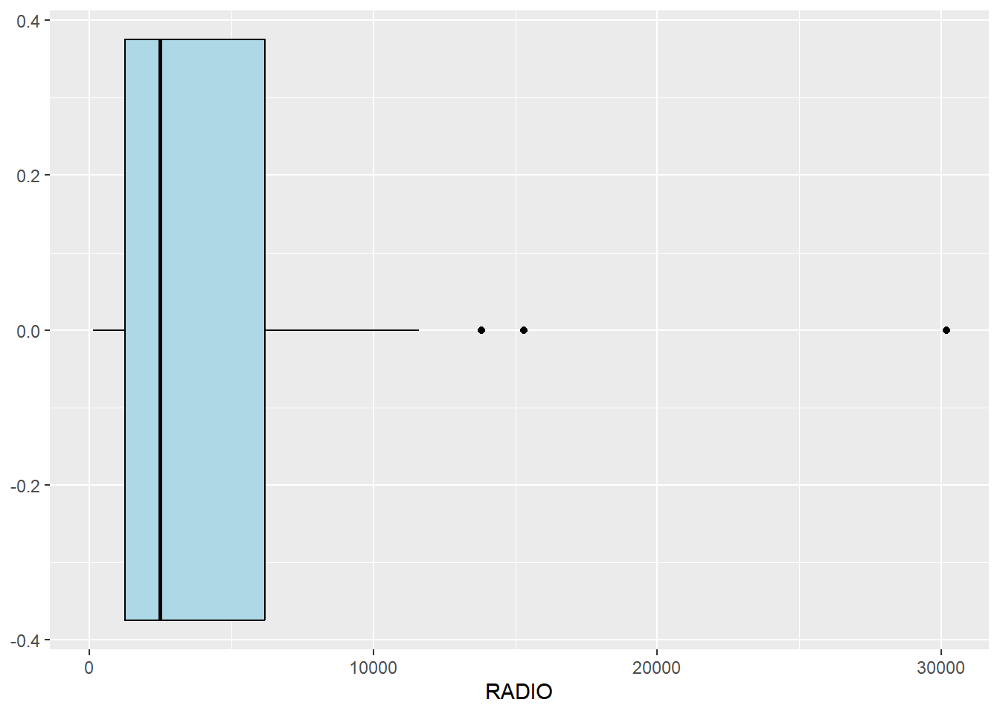
Note
Now from the plot, we can see clearly that :
Q1 : ~1200
Median : ~2500
Q3 : ~6000
Upper whisker goes up to 12000
Outliers : 2 around 14000 and 15000 and the extreme outlier at ~30000
The pronounced right-skewness of the distribution, characterized by a compressed lower region and an extended upper tail all can also be seen in the box plot.
Next, we will also plotting the distribution of the newly derived variables (i.e. Radio penetration rate) by using the code chunk below.
ggplot(data=ict_derived,
aes(x=`RADIO_PR`)) +
geom_histogram(bins=20,
color="black",
fill="light blue")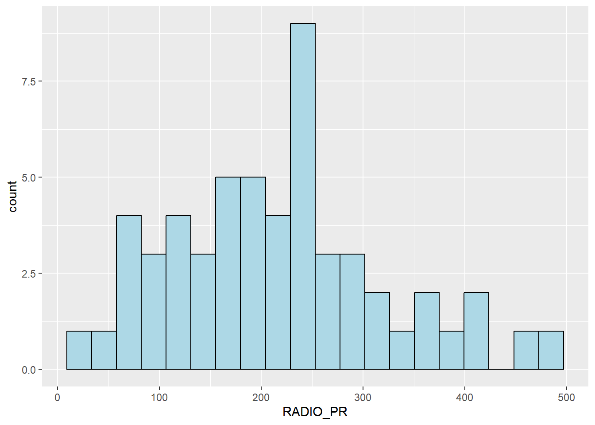
Note
Analysis
Now you can see that with this newly engineered data variable, the Radio PR is fairly symmetric, and only mildly right-skewed as compared to the original Radio column.
It has a median of around 210 and a range of roughly 20 to 490. The peak values are at around 230 to 250, with a fairly even spread on either side.
To note , since we had divided by total households for RADIO_PR , it has actually removed the size effect, so the distribution is much more balanced. The single outlier near 485 would now actually represent : It is a township with unusually high radio ownership relative to its households.
Now again we look at the box plot.
ggplot(data=ict_derived,
aes(x=`RADIO_PR`)) +
geom_boxplot(color="black",
fill="light blue")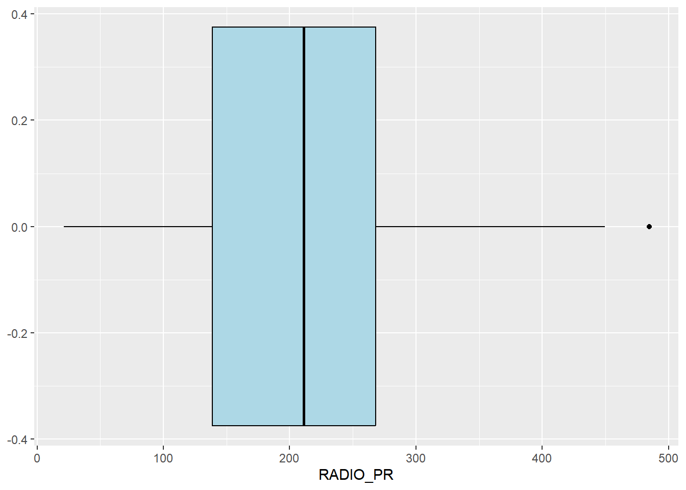
Note
Now there is only one outlier of around 485 from the box plot.
As compared to the RADIO box plot with 3 outliers, those three outliers are probably just the most populous townships. They are not necessarily places where radio use is unusually high like as shown in RADIO_PR
In the figure below, multiple histograms are plotted to reveal the distribution of the selected variables in the ict_derived data.frame.
radio <- ggplot(data=ict_derived,
aes(x= `RADIO_PR`)) +
geom_histogram(bins=20,
color="black",
fill="light blue")
tv <- ggplot(data=ict_derived,
aes(x= `TV_PR`)) +
geom_histogram(bins=20,
color="black",
fill="light blue")
llphone <- ggplot(data=ict_derived,
aes(x= `LLPHONE_PR`)) +
geom_histogram(bins=20,
color="black",
fill="light blue")
mphone <- ggplot(data=ict_derived,
aes(x= `MPHONE_PR`)) +
geom_histogram(bins=20,
color="black",
fill="light blue")
computer <- ggplot(data=ict_derived,
aes(x= `COMPUTER_PR`)) +
geom_histogram(bins=20,
color="black",
fill="light blue")
internet <- ggplot(data=ict_derived,
aes(x= `INTERNET_PR`)) +
geom_histogram(bins=20,
color="black",
fill="light blue")Next, the ggarrange() function of ggpubr package is used to group these histograms together.
ggarrange(radio, tv, llphone, mphone, computer, internet,
ncol = 3,
nrow = 2)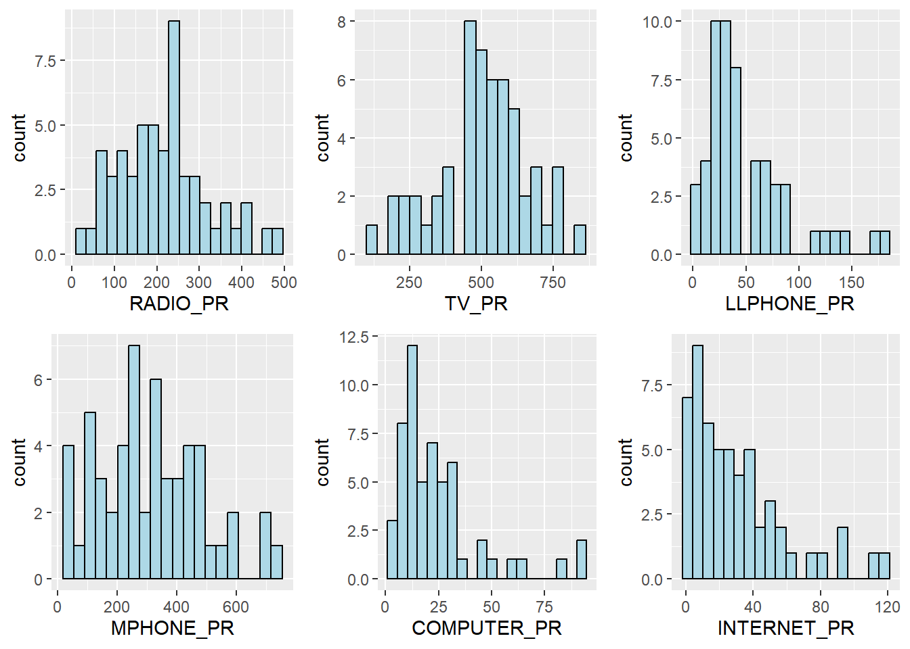
EDA using choropleth map
Before we can prepare the choropleth map, we need to combine both the geospatial data object (i.e. shan_sf) and aspatial data.frame object (i.e. ict_derived) into one. This will be performed by using the left_join function of dplyr package. The shan_sf simple feature data.frame will be used as the base data object and the ict_derived data.frame will be used as the join table.
The code chunks below is used to perform the task. The unique identifier used to join both data objects is TS_PCODE.
shan_sf <- left_join(shan_sf,
ict_derived, by=c("TS_PCODE"="TS_PCODE"))
write_rds(shan_sf, "data/aspatial/shan_sf.rds")The message above shows that TS_CODE field is the common field used to perform the left-join.
Important
Note that there is no new output data been created. Instead, the data fields from ict_derived data frame are now updated into the data frame of shan_sf.
shan_sf <- read_rds("data/aspatial/shan_sf.rds")Now we will prepare the choropleth map!
To have a quick look at the distribution of Radio penetration rate of Shan State at township level, a choropleth map will be prepared.
The code chunks below are used to prepare the choroplethby using the qtm() function of tmap package.
qtm(shan_sf, "RADIO_PR")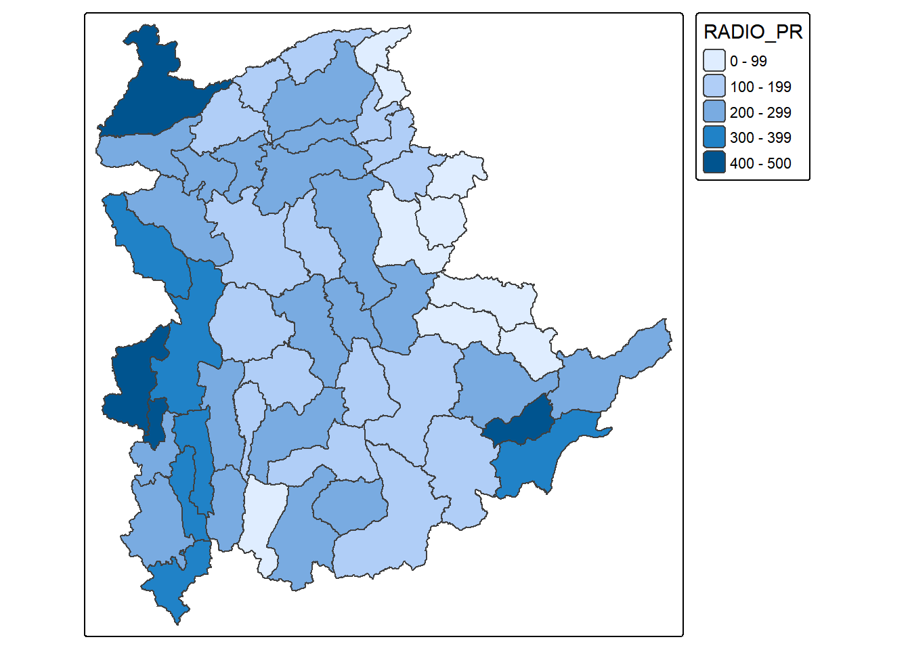
In order to reveal the distribution shown in the choropleth map above are bias to the underlying total number of households at the townships, we will create two choropleth maps, one for the total number of households (i.e. TT_HOUSEHOLDS.map) and one for the total number of household with Radio (RADIO.map) by using the code chunk below.
TT_HOUSEHOLDS.map <- tm_shape(shan_sf) +
tm_fill(col = "TT_HOUSEHOLDS",
n = 5,
style = "jenks",
title = "Total households") +
tm_borders(alpha = 0.5)
RADIO.map <- tm_shape(shan_sf) +
tm_fill(col = "RADIO",
n = 5,
style = "jenks",
title = "Number Radio ") +
tm_borders(alpha = 0.5)
tmap_arrange(TT_HOUSEHOLDS.map, RADIO.map,
asp=NA, ncol=2)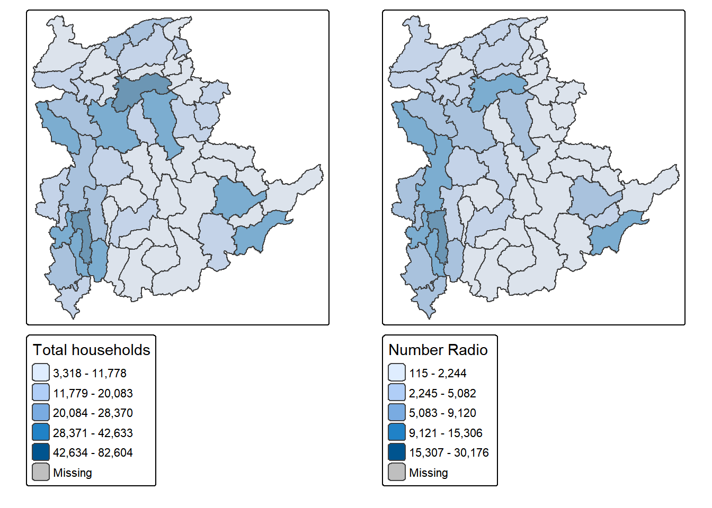
Notice that the choropleth maps above clearly show that townships with relatively larger number ot households are also showing relatively higher number of radio ownership.
Now let us plot the choropleth maps showing the dsitribution of total number of households and Radio penetration rate by using the code chunk below.
tm_shape(shan_sf) +
tm_polygons(c("TT_HOUSEHOLDS", "RADIO_PR"),
style="jenks") +
tm_facets(sync = TRUE, ncol = 2) +
tm_legend(legend.position = c("right", "bottom"))+
tm_layout(outer.margins=0, asp=0)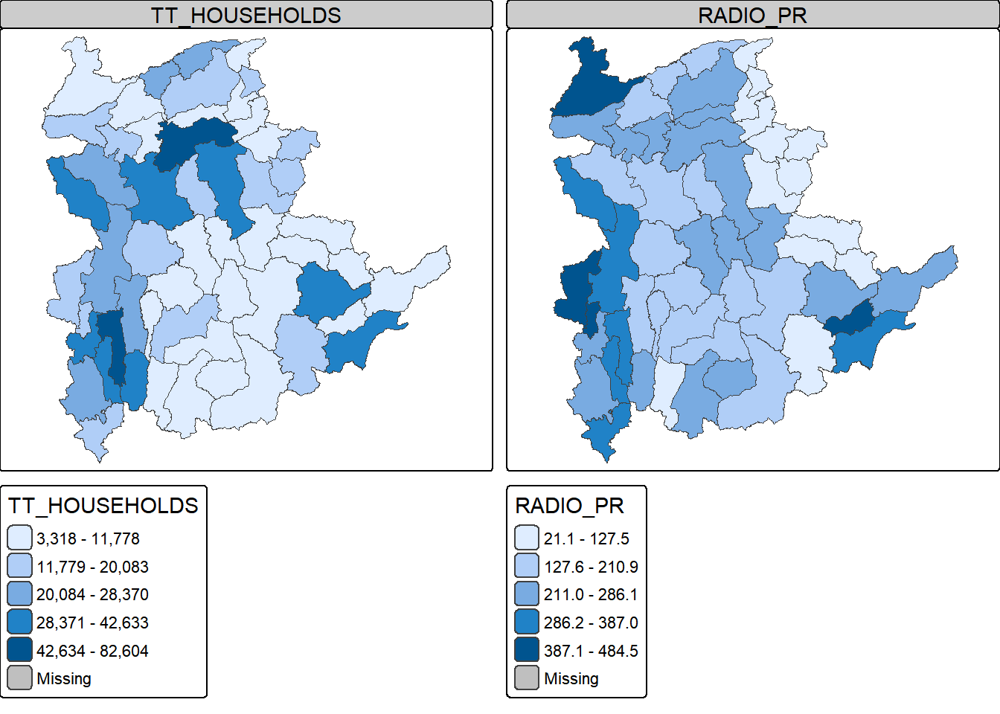
Note
Analysis :
TT_HOUSEHOLDS measures absolute demographic volume, whereas RADIO_PR normalizes radio counts against total households, so its without the distortion effect from the population size
The northwestern and western border districts show relatively low total household counts (lightest blue bins in TT_HOUSEHOLDS) but rank among the highest in radio penetration (darkest blue bins, 387.1–484.5 in RADIO_PR. This shows :
There is High Technological/Media Reliance in Remote Areas
There is an overcoming Population Size Bias, where without the normalization of data, it will be unknown that the radio adoption rate is the greatest in the forementioned smaller communities
Correlation Analysis
Before we perform cluster analysis, it is important for us to ensure that the cluster variables are not highly correlated.
In this section, you will learn how to use corrplot.mixed() function of corrplot package to visualise and analyse the correlation of the input variables.
cluster_vars.cor = cor(ict_derived[,12:17])
corrplot.mixed(cluster_vars.cor,
lower = "ellipse",
upper = "number",
tl.pos = "lt",
diag = "l",
tl.col = "black")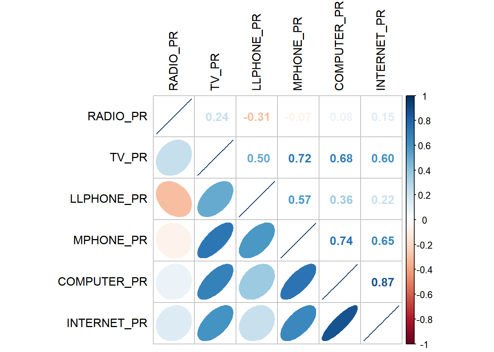
The correlation plot above shows that COMPUTER_PR and INTERNET_PR are highly correlated (dark intense shade of blue!). This suggest that only one of them should be used in the cluster analysis instead of both.
Hierarchy Cluster Analysis
The code chunk below will be used to extract the clustering variables from the shan_sf simple feature object into data.frame.
cluster_vars <- shan_sf %>%
st_set_geometry(NULL) %>%
select("TS.x", "RADIO_PR", "TV_PR", "LLPHONE_PR", "MPHONE_PR", "COMPUTER_PR")
head(cluster_vars,10) TS.x RADIO_PR TV_PR LLPHONE_PR MPHONE_PR COMPUTER_PR
1 Mongla 82.18126 673.1951 86.98157 555.1075 62.59601
2 Mongping 161.90476 330.8817 24.61103 190.7591 11.59830
3 Mongyang 71.74622 569.3250 113.94407 469.0187 12.84712
4 Monghsat 107.67490 460.1169 34.50877 189.5154 22.81727
5 Mongton 193.51808 388.4453 25.12917 290.5120 21.84124
6 Monghpyak 405.02839 503.3252 42.49797 381.8329 25.14193
7 Mongyawng 278.08501 739.2953 121.97820 324.0638 15.32628
8 Tachileik 363.35354 759.4214 59.75176 735.4309 92.40194
9 Hopang 127.60443 556.8737 81.74659 487.6882 24.52398
10 Mongmao 120.05744 512.6855 85.49545 424.9880 11.29727Notice that the final clustering variables list does not include variable INTERNET_PR because it is highly correlated with variable COMPUTER_PR.
Next, we need to change the rows by township name instead of row number by using the code chunk below
row.names(cluster_vars) <- cluster_vars$"TS.x"
head(cluster_vars,10) TS.x RADIO_PR TV_PR LLPHONE_PR MPHONE_PR COMPUTER_PR
Mongla Mongla 82.18126 673.1951 86.98157 555.1075 62.59601
Mongping Mongping 161.90476 330.8817 24.61103 190.7591 11.59830
Mongyang Mongyang 71.74622 569.3250 113.94407 469.0187 12.84712
Monghsat Monghsat 107.67490 460.1169 34.50877 189.5154 22.81727
Mongton Mongton 193.51808 388.4453 25.12917 290.5120 21.84124
Monghpyak Monghpyak 405.02839 503.3252 42.49797 381.8329 25.14193
Mongyawng Mongyawng 278.08501 739.2953 121.97820 324.0638 15.32628
Tachileik Tachileik 363.35354 759.4214 59.75176 735.4309 92.40194
Hopang Hopang 127.60443 556.8737 81.74659 487.6882 24.52398
Mongmao Mongmao 120.05744 512.6855 85.49545 424.9880 11.29727Notice that the row number has been replaced into the township name.
Now, we will delete the TS.x field by using the code chunk below.
shan_ict <- select(cluster_vars, c(2:6))
head(shan_ict, 10) RADIO_PR TV_PR LLPHONE_PR MPHONE_PR COMPUTER_PR
Mongla 82.18126 673.1951 86.98157 555.1075 62.59601
Mongping 161.90476 330.8817 24.61103 190.7591 11.59830
Mongyang 71.74622 569.3250 113.94407 469.0187 12.84712
Monghsat 107.67490 460.1169 34.50877 189.5154 22.81727
Mongton 193.51808 388.4453 25.12917 290.5120 21.84124
Monghpyak 405.02839 503.3252 42.49797 381.8329 25.14193
Mongyawng 278.08501 739.2953 121.97820 324.0638 15.32628
Tachileik 363.35354 759.4214 59.75176 735.4309 92.40194
Hopang 127.60443 556.8737 81.74659 487.6882 24.52398
Mongmao 120.05744 512.6855 85.49545 424.9880 11.29727write_rds(shan_ict, "data/aspatial/shan_ict.rds")
shan_ict <- read_rds("data/aspatial/shan_ict.rds")Data Standardisation
In general, multiple variables will be used in cluster analysis. It is not unusual their values range are different. In order to avoid the cluster analysis result is baised to clustering variables with large values, it is useful to standardise the input variables before performing cluster analysis.
Min-Max standardisation
In the code chunk below, normalize() of heatmaply package is used to stadardisation the clustering variables by using Min-Max method. The summary() is then used to display the summary statistics of the standardised clustering variables.
shan_ict.std <- normalize(shan_ict)
summary(shan_ict.std) RADIO_PR TV_PR LLPHONE_PR MPHONE_PR
Min. :0.0000 Min. :0.0000 Min. :0.0000 Min. :0.0000
1st Qu.:0.2544 1st Qu.:0.4600 1st Qu.:0.1123 1st Qu.:0.2199
Median :0.4097 Median :0.5523 Median :0.1948 Median :0.3846
Mean :0.4199 Mean :0.5416 Mean :0.2703 Mean :0.3972
3rd Qu.:0.5330 3rd Qu.:0.6750 3rd Qu.:0.3746 3rd Qu.:0.5608
Max. :1.0000 Max. :1.0000 Max. :1.0000 Max. :1.0000
COMPUTER_PR
Min. :0.00000
1st Qu.:0.09598
Median :0.17607
Mean :0.23692
3rd Qu.:0.29868
Max. :1.00000 Notice that the values range of the Min-max standardised clustering variables are 0-1 now.
Z-Score Standardisation
Z-score standardisation can be performed easily by using scale() of Base R. The code chunk below will be used to stadardisation the clustering variables by using Z-score method.
shan_ict.z <- scale(shan_ict)
describe(shan_ict.z) vars n mean sd median trimmed mad min max range skew kurtosis
RADIO_PR 1 55 0 1 -0.04 -0.06 0.94 -1.85 2.55 4.40 0.48 -0.27
TV_PR 2 55 0 1 0.05 0.04 0.78 -2.47 2.09 4.56 -0.38 -0.23
LLPHONE_PR 3 55 0 1 -0.33 -0.15 0.68 -1.19 3.20 4.39 1.37 1.49
MPHONE_PR 4 55 0 1 -0.05 -0.06 1.01 -1.58 2.40 3.98 0.48 -0.34
COMPUTER_PR 5 55 0 1 -0.26 -0.18 0.64 -1.03 3.31 4.34 1.80 2.96
se
RADIO_PR 0.13
TV_PR 0.13
LLPHONE_PR 0.13
MPHONE_PR 0.13
COMPUTER_PR 0.13Notice the mean and standard deviation of the Z-score standardised clustering variables are 0 and 1 respectively.
Note: describe() of psych package is used here instead of summary() of Base R because the earlier provides standard deviation.
Warning
Warning: Z-score standardisation method should only be used if we would assume all variables come from some normal distribution.
Visualising the Standardised clustering variables
Beside reviewing the summary statistics of the standardised clustering variables, it is also a good practice to visualise their distribution graphical.
The code chunk below plot the scaled Radio_PR field.
r <- ggplot(data=ict_derived,
aes(x= `RADIO_PR`)) +
geom_histogram(bins=20,
color="black",
fill="light blue") +
ggtitle("Raw values without standardisation")
shan_ict_s_df <- as.data.frame(shan_ict.std)
s <- ggplot(data=shan_ict_s_df,
aes(x=`RADIO_PR`)) +
geom_histogram(bins=20,
color="black",
fill="light blue") +
ggtitle("Min-Max Standardisation")
shan_ict_z_df <- as.data.frame(shan_ict.z)
z <- ggplot(data=shan_ict_z_df,
aes(x=`RADIO_PR`)) +
geom_histogram(bins=20,
color="black",
fill="light blue") +
ggtitle("Z-score Standardisation")
ggarrange(r, s, z,
ncol = 3,
nrow = 1)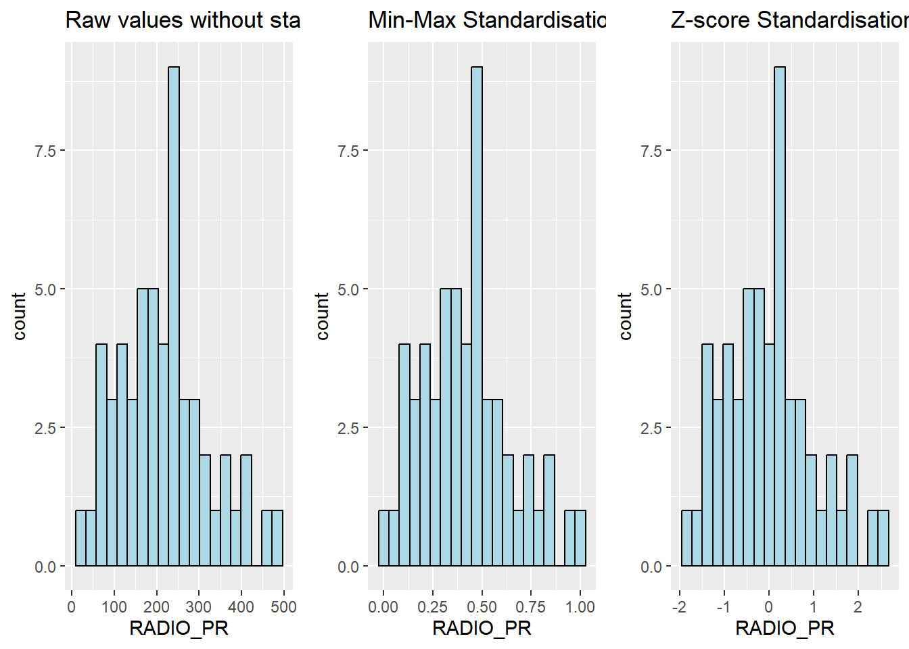
Note
Analysis :
Notice that the Distribution of the dataset is still the same even after the standardisation of the data? This is proven again using the separate example below!
r <- ggplot(data=ict_derived,
aes(x= `RADIO_PR`)) +
geom_density(color="black",
fill="light blue") +
ggtitle("Raw values without standardisation")
shan_ict_s_df <- as.data.frame(shan_ict.std)
s <- ggplot(data=shan_ict_s_df,
aes(x=`RADIO_PR`)) +
geom_density(color="black",
fill="light blue") +
ggtitle("Min-Max Standardisation")
shan_ict_z_df <- as.data.frame(shan_ict.z)
z <- ggplot(data=shan_ict_z_df,
aes(x=`RADIO_PR`)) +
geom_density(color="black",
fill="light blue") +
ggtitle("Z-score Standardisation")
ggarrange(r, s, z,
ncol = 3,
nrow = 1)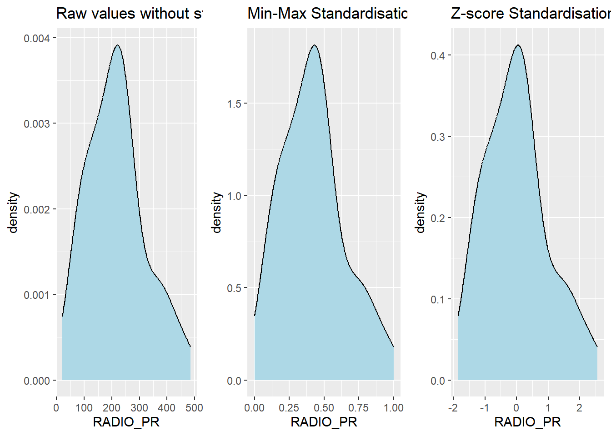
Computing Proximity Matrix
In R, many packages provide functions to calculate distance matrix. We will compute the proximity matrix by using dist() of R.
dist() supports six distance proximity calculations, they are: euclidean, maximum, manhattan, canberra, binary and minkowski. The default is euclidean proximity matrix.
The code chunk below is used to compute the proximity matrix using euclidean method.
proxmat <- dist(shan_ict, method = 'euclidean')The code chunk below can then be used to list the content of proxmat for visual inspection.
proxmat Mongla Mongping Mongyang Monghsat Mongton Monghpyak
Mongping 512.61580
Mongyang 146.66661 387.80686
Monghsat 429.00536 140.95392 312.64797
Mongton 411.06668 119.86993 295.60023 150.98053
Monghpyak 408.03397 354.76537 358.17599 356.84917 258.04282
Mongyawng 315.57550 455.59190 304.21734 364.40429 375.22688 285.56475
Tachileik 347.33155 727.08969 448.79027 677.09508 608.76740 444.04411
Hopang 147.02444 379.27212 69.25859 317.64824 273.50305 304.26577
Mongmao 216.24705 305.57166 91.06281 247.17708 206.57001 291.88846
Tangyan 526.80849 161.67411 421.06366 144.59626 198.88460 335.26416
Matman 708.17595 201.65224 585.61776 313.59911 303.04574 470.46845
Kengtung 202.45004 442.80821 217.08047 383.72138 329.38387 221.47613
Mongkhet 574.40292 113.80917 445.40621 167.98445 223.22828 462.63265
Pangwaun 319.18643 340.37881 225.25026 343.53898 257.50434 381.95144
Konkyan 468.09747 242.02901 329.39338 268.25060 248.25265 463.39594
Laukkaing 202.55831 708.13447 326.19219 626.44910 604.66190 565.84279
Hsipaw 373.47509 168.92101 267.10497 121.78922 90.69766 237.67919
Kyaukme 241.58966 330.28984 188.59489 253.25370 229.28509 217.64419
Namtu 483.49434 321.66441 413.26052 231.78673 308.71751 346.57799
Nawnghkio 381.40808 316.14719 323.32123 289.83220 225.81118 93.03711
Hseni 226.82048 395.58453 210.19929 331.22632 286.75945 200.26876
Kunlong 346.46200 309.05385 247.22785 202.31862 270.02165 357.44661
Lashio 179.95877 454.52548 209.33700 377.86793 347.11584 262.09281
Mongyai 535.28615 65.38727 414.31237 127.35225 159.79790 370.01575
Narphan 531.46949 188.64567 401.39475 278.21548 215.97925 448.40651
Pangsang (Panghkam) 217.88123 308.33123 108.37735 256.37933 210.77938 315.11651
Mabein 406.09124 518.16310 411.88352 470.48135 425.16902 212.69450
Mongmit 384.30076 265.12574 309.51302 214.20854 192.67961 177.76325
Kutkai 388.40984 182.75266 285.33223 154.32012 107.06341 206.61627
Muse 256.80556 744.44948 389.59919 663.76026 634.71074 539.43485
Namhkan 77.21355 523.74815 167.72448 455.10875 414.53594 379.50202
Manton 712.51416 200.48082 585.70558 317.15603 310.20581 502.20840
Namhsan 564.02740 130.23777 450.97869 169.56962 196.76188 352.70492
Pindaya 549.42389 310.64850 475.93982 314.71506 283.35574 221.30579
Ywangan 728.16301 337.94020 630.71590 432.98028 361.23257 367.44835
Langkho 229.01675 343.96455 175.35413 279.52329 236.70878 200.27496
Mawkmai 686.88950 194.31049 558.83162 275.09705 313.35220 536.71695
Mongnai 354.10985 202.99615 260.39387 125.25968 131.67061 253.26470
Mongpan 253.20001 318.47482 194.93467 283.30992 200.31803 187.85699
Kunhing 306.47566 212.59619 188.89405 165.38834 114.03609 250.74435
Kyethi 556.02500 187.43974 453.86726 190.50609 222.52947 328.16234
Laihka 315.93218 272.82761 229.71502 158.93517 212.07320 293.22640
Loilen 338.67408 231.99959 246.76592 118.65144 176.16001 296.99681
Monghsu 424.51868 158.90478 323.95988 137.24737 107.04894 232.17823
Mongkaing 761.48327 257.18572 631.91325 375.60376 365.50032 568.21089
Nansang 289.45119 287.36626 218.49285 201.92690 199.58124 227.52638
Hopong 432.31105 134.00139 323.35704 100.45714 106.21031 267.95563
Hsihseng 478.66210 199.64389 382.59743 153.49551 194.64317 285.37627
Pinlaung 372.59678 229.75261 286.03834 160.44703 163.42143 222.20020
Kalaw 260.26411 375.64739 233.56349 317.96188 267.87522 167.08436
Lawksawk 393.18472 396.47081 363.37684 352.31496 311.07742 142.31691
Nyaungshwe 347.60273 319.32583 294.29500 286.37238 219.72196 103.97300
Pekon 441.20998 259.68288 363.58788 225.64279 208.14888 190.93173
Taunggyi 297.09863 621.53039 374.58247 562.88102 508.40925 334.17439
Mongyawng Tachileik Hopang Mongmao Tangyan Matman
Mongping
Mongyang
Monghsat
Mongton
Monghpyak
Mongyawng
Tachileik 432.10118
Hopang 290.51360 403.82035
Mongmao 296.40789 472.95568 78.29342
Tangyan 377.52279 719.84066 412.22167 347.14183
Matman 601.80824 890.12935 573.55355 501.59903 242.78233
Kengtung 203.87199 295.90429 164.29921 207.58055 429.95076 613.01033
Mongkhet 522.91815 820.50164 451.51070 375.35820 201.49393 203.02855
Pangwaun 475.33116 540.60474 206.98364 187.40057 447.05580 523.43600
Konkyan 522.38580 730.92980 348.18522 281.87425 367.46064 392.40306
Laukkaing 454.80044 325.06329 331.67199 404.00848 722.40954 903.72094
Hsipaw 294.70967 576.18780 248.72536 185.99483 167.69794 344.45451
Kyaukme 181.55295 429.15493 154.91633 146.09228 306.78359 505.52285
Namtu 262.24331 659.56458 408.24516 365.03882 178.69483 416.65397
Nawnghkio 220.61209 470.45533 279.84188 257.76465 269.07880 444.05061
Hseni 173.86004 354.90063 162.80878 184.67099 373.07575 564.64051
Kunlong 240.39800 595.70536 271.34451 224.43391 268.07983 468.27436
Lashio 172.70139 311.95286 170.63913 214.23677 429.84475 628.11049
Mongyai 445.78964 750.29555 408.73288 335.61300 109.08506 186.95158
Narphan 572.76394 760.29566 397.85908 331.42618 348.84991 312.05193
Pangsang (Panghkam) 336.16703 481.31907 92.57672 57.60801 364.76893 506.29940
Mabein 193.49994 365.32538 368.55167 384.91867 448.59948 637.53975
Mongmit 214.21738 529.63213 281.05362 242.54541 195.92520 401.25041
Kutkai 281.03383 568.99109 263.31986 204.69232 166.61820 340.86349
Muse 422.37358 221.19950 377.44407 451.82530 736.93741 929.11283
Namhkan 321.21112 295.91660 146.18632 223.32205 542.64078 715.42102
Manton 629.43339 910.23039 577.52046 503.79786 271.82672 59.52318
Namhsan 430.02019 754.03913 440.51555 371.71448 63.67613 180.09747
Pindaya 332.92193 635.51774 443.26362 402.21719 208.43740 354.39039
Ywangan 570.56521 807.44220 596.19312 542.85957 324.77002 255.22031
Langkho 186.11584 402.33622 134.24847 134.50170 332.02048 518.86151
Mawkmai 620.04321 919.38755 561.24281 485.52853 262.66006 147.83545
Mongnai 275.77546 563.95232 243.00945 188.29603 180.37471 376.33870
Mongpan 275.15989 411.03849 135.62913 131.59966 340.39128 494.81014
Kunhing 295.35984 532.26397 172.96164 103.91040 249.74161 403.66587
Kyethi 387.71518 728.87329 440.48114 377.89657 47.79331 233.83079
Laihka 211.99976 549.08985 230.78652 185.99082 224.29176 443.25453
Loilen 261.75211 573.75476 242.89326 190.26490 196.60826 406.56282
Monghsu 312.85089 605.02113 301.84458 242.43599 127.42203 308.13805
Mongkaing 700.98284 967.14087 626.17673 552.31959 348.56123 135.51424
Nansang 191.11990 486.77266 196.47091 164.99494 249.70235 458.06573
Hopong 326.59925 632.45718 309.77356 244.16253 106.82328 291.84351
Hsihseng 309.51462 658.87060 370.01334 311.98001 70.27241 304.02806
Pinlaung 235.55497 555.01039 265.96924 217.58854 169.50567 382.40610
Kalaw 173.43078 373.64459 185.14704 195.18913 348.06617 537.63884
Lawksawk 179.07229 441.82621 321.16462 314.64777 323.14701 515.39711
Nyaungshwe 218.12104 445.81335 247.19891 230.45003 284.14692 460.91883
Pekon 248.43910 573.39528 336.38582 293.70625 167.79937 368.25761
Taunggyi 287.73864 150.84117 329.95252 387.33906 592.65262 778.45810
Kengtung Mongkhet Pangwaun Konkyan Laukkaing Hsipaw
Mongping
Mongyang
Monghsat
Mongton
Monghpyak
Mongyawng
Tachileik
Hopang
Mongmao
Tangyan
Matman
Kengtung
Mongkhet 531.35998
Pangwaun 337.48335 407.02947
Konkyan 474.82621 254.24424 263.97576
Laukkaing 351.48520 769.06406 470.63605 635.92043
Hsipaw 284.08582 253.80950 298.12447 296.74316 569.06099
Kyaukme 136.23356 409.03553 308.31407 393.79911 428.74978 163.95741
Namtu 385.33554 355.99713 517.03554 478.37690 664.06286 229.44658
Nawnghkio 208.29647 414.10280 381.67478 439.34272 552.65554 176.09570
Hseni 66.12817 481.88406 330.70182 448.84563 391.74585 231.48538
Kunlong 317.14187 341.68641 392.45403 329.11433 521.88657 205.10051
Lashio 59.85893 534.44463 362.45608 485.51312 334.65738 290.86435
Mongyai 460.39706 104.98924 394.07696 287.87384 732.68347 177.33790
Narphan 505.40025 217.28718 264.64997 158.82353 708.82887 295.40170
Pangsang (Panghkam) 229.85484 375.58139 157.48757 274.81900 408.04016 205.04337
Mabein 219.47071 610.30557 523.44632 613.51206 520.67373 366.42787
Mongmit 246.45691 349.45980 381.51246 403.39082 568.27732 118.18050
Kutkai 279.19573 273.91673 321.80465 310.60810 580.38112 51.46282
Muse 330.08211 816.44931 541.97887 704.86973 149.26996 591.03355
Namhkan 175.63015 596.19944 310.44067 481.59596 196.46063 382.79302
Manton 631.99123 181.33894 510.79265 366.66876 907.38406 359.60008
Namhsan 466.20497 170.90848 448.58030 352.20115 760.45960 194.47928
Pindaya 385.68322 391.74783 512.13162 500.86933 726.85355 245.98884
Ywangan 573.23173 408.97731 580.13146 528.12533 908.82520 388.63147
Langkho 107.16213 428.08061 295.38434 386.95022 410.41270 183.05109
Mawkmai 632.54638 115.58388 500.68857 339.01411 882.51110 351.34601
Mongnai 272.28711 275.76855 312.13429 328.82831 551.56800 52.68195
Mongpan 142.21554 412.17123 232.52209 365.87588 435.58047 179.52054
Kunhing 245.95083 292.49814 229.09986 253.74202 500.41640 90.77517
Kyethi 444.26274 233.25039 476.62610 400.10989 749.99415 195.17677
Laihka 258.23950 324.97428 351.78203 351.75354 507.39700 128.42987
Loilen 282.22935 284.76895 331.69981 334.19820 535.57527 98.04789
Monghsu 316.91914 247.73318 343.38498 331.72187 619.01766 58.55724
Mongkaing 692.74693 222.60577 536.95736 380.92091 954.11795 423.77868
Nansang 193.67980 360.99219 326.12960 374.70456 480.60074 120.24428
Hopong 340.47382 212.99485 346.00673 304.49287 628.48557 62.86179
Hsihseng 370.72441 256.70338 433.06326 383.49700 670.74564 136.54610
Pinlaung 263.48638 305.86058 356.37963 365.44693 563.81750 76.55260
Kalaw 88.29335 465.52013 338.35194 444.75859 427.77791 212.36711
Lawksawk 209.38215 487.41102 453.02765 520.31264 548.83928 249.35081
Nyaungshwe 177.75714 417.08639 352.92324 432.35040 520.24345 169.92664
Pekon 297.67761 342.08722 423.81347 421.48797 624.82399 145.37542
Taunggyi 186.28225 712.80752 497.61245 650.56905 345.98041 462.31183
Kyaukme Namtu Nawnghkio Hseni Kunlong Lashio
Mongping
Mongyang
Monghsat
Mongton
Monghpyak
Mongyawng
Tachileik
Hopang
Mongmao
Tangyan
Matman
Kengtung
Mongkhet
Pangwaun
Konkyan
Laukkaing
Hsipaw
Kyaukme
Namtu 270.87277
Nawnghkio 157.04230 257.52713
Hseni 81.20593 327.41448 164.05304
Kunlong 215.63037 233.60474 285.04608 276.19175
Lashio 129.95255 365.88437 230.55346 79.41836 295.23103
Mongyai 339.27780 278.02761 319.57938 408.23212 299.36066 466.36472
Narphan 420.30003 494.36143 435.59661 474.12297 413.07823 525.63854
Pangsang (Panghkam) 175.35273 392.97391 287.10769 214.66375 258.49342 236.72516
Mabein 264.88283 366.16094 204.63154 213.61240 396.61508 231.28227
Mongmit 144.02475 179.62251 89.07103 189.37188 224.12169 251.29457
Kutkai 170.93318 225.28268 147.44053 229.37894 204.54010 289.82513
Muse 434.75768 659.16927 533.68806 381.30567 547.24297 313.15288
Namhkan 247.81990 506.32466 367.33575 212.11323 375.73885 173.27153
Manton 522.86003 448.58230 475.77296 584.63341 479.76855 646.66493
Namhsan 347.85944 240.95555 299.74967 411.96125 310.40560 472.04024
Pindaya 311.01487 225.40822 180.64047 337.98982 355.47066 398.98167
Ywangan 505.89191 444.66868 377.87702 534.44679 531.63089 602.17475
Langkho 51.67279 305.03473 156.51662 66.66133 224.52741 115.18145
Mawkmai 512.02846 427.95451 495.15047 582.53670 446.53763 638.60773
Mongnai 142.45669 209.35473 182.21245 216.81639 202.92529 270.86983
Mongpan 110.37831 352.91394 172.84425 120.66550 288.03320 172.33279
Kunhing 145.00266 296.43996 206.15773 206.47448 193.77551 255.10832
Kyethi 328.14177 186.90932 267.21607 388.33498 298.55859 447.10266
Laihka 128.24979 185.86794 211.88187 204.49010 122.68682 238.64533
Loilen 146.92675 194.24075 219.26405 227.10984 166.53599 268.92310
Monghsu 200.77712 209.64684 170.09168 262.28462 239.89665 325.71557
Mongkaing 586.05094 525.04057 546.69447 648.04408 539.91284 708.65819
Nansang 60.32773 217.61884 151.13185 136.45492 183.01388 184.47950
Hopong 218.84211 206.82668 204.88286 286.41193 219.06817 345.31042
Hsihseng 250.27059 131.89940 209.88026 312.74375 231.85967 369.00833
Pinlaung 139.67966 170.04533 139.27495 204.47572 194.76257 262.51735
Kalaw 79.42225 307.27427 127.74787 38.52842 273.01375 106.69059
Lawksawk 186.29066 260.95300 90.82891 171.50398 318.30406 220.75270
Nyaungshwe 126.50414 271.41464 43.26545 130.86310 285.13095 201.58191
Pekon 202.12206 165.02707 113.15370 243.98001 249.36301 303.80011
Taunggyi 312.60547 518.72748 344.79200 238.19389 471.29032 195.14541
Mongyai Narphan Pangsang (Panghkam) Mabein Mongmit
Mongping
Mongyang
Monghsat
Mongton
Monghpyak
Mongyawng
Tachileik
Hopang
Mongmao
Tangyan
Matman
Kengtung
Mongkhet
Pangwaun
Konkyan
Laukkaing
Hsipaw
Kyaukme
Namtu
Nawnghkio
Hseni
Kunlong
Lashio
Mongyai
Narphan 248.82845
Pangsang (Panghkam) 343.30638 316.30314
Mabein 516.40426 630.34312 418.54016
Mongmit 256.72744 406.15714 272.67383 263.37099
Kutkai 188.94166 314.27683 228.33583 340.55064 97.61092
Muse 763.91399 770.40234 460.24292 453.27410 563.01629
Namhkan 550.62819 536.85519 231.38484 379.56035 386.02794
Manton 195.59882 280.26395 504.75214 674.01120 430.64070
Namhsan 77.35900 316.54695 385.65526 488.33873 237.78494
Pindaya 287.41816 474.50209 428.24958 313.45776 171.86828
Ywangan 333.12853 452.95769 556.82263 529.14689 381.88259
Langkho 358.95672 420.65204 167.65920 253.84371 164.26299
Mawkmai 178.70499 273.75350 484.14757 693.24602 434.92968
Mongnai 203.23607 329.31700 204.25746 358.86053 115.86190
Mongpan 346.39710 371.13393 140.23910 301.52942 193.32063
Kunhing 238.99570 281.62645 123.18870 375.82140 173.50424
Kyethi 137.79420 374.90376 396.89963 442.07679 202.92551
Laihka 264.13364 392.32592 214.19291 345.00222 141.87227
Loilen 224.79239 354.79137 207.94433 375.06406 145.48666
Monghsu 154.86049 311.92379 260.52971 367.19820 109.15790
Mongkaing 262.84016 285.65085 548.40662 747.17454 503.61965
Nansang 288.55962 398.13308 193.36162 287.92364 104.91839
Hopong 124.62791 294.40441 261.51075 398.00917 136.93111
Hsihseng 162.27126 377.52977 335.52974 381.20187 131.49728
Pinlaung 220.56339 371.26895 244.47146 312.66966 57.46286
Kalaw 386.74701 463.53759 224.03998 198.14085 160.05997
Lawksawk 391.26989 523.69580 345.91486 130.36525 140.11550
Nyaungshwe 327.13541 427.94086 257.77823 210.21337 99.38590
Pekon 242.52301 416.84901 321.81214 282.26877 59.61977
Taunggyi 635.94105 684.20905 405.59730 226.24011 399.84278
Kutkai Muse Namhkan Manton Namhsan Pindaya
Mongping
Mongyang
Monghsat
Mongton
Monghpyak
Mongyawng
Tachileik
Hopang
Mongmao
Tangyan
Matman
Kengtung
Mongkhet
Pangwaun
Konkyan
Laukkaing
Hsipaw
Kyaukme
Namtu
Nawnghkio
Hseni
Kunlong
Lashio
Mongyai
Narphan
Pangsang (Panghkam)
Mabein
Mongmit
Kutkai
Muse 592.90743
Namhkan 392.48568 238.67060
Manton 361.82684 941.49778 721.86149
Namhsan 191.32762 778.52971 576.42717 210.48485
Pindaya 212.81775 704.11252 543.81859 402.42888 228.41073
Ywangan 360.11861 899.44137 714.43173 306.16379 286.16305 257.31610
Langkho 180.51419 413.64173 224.40029 535.95620 368.20978 323.28133
Mawkmai 364.95519 926.93007 706.47792 109.08779 215.19289 437.99577
Mongnai 91.15307 571.97975 370.05669 391.54062 218.10003 258.49346
Mongpan 185.18173 447.49969 240.34131 507.96808 364.77086 335.72896
Kunhing 108.84990 533.00162 314.92119 410.49230 270.79121 318.23811
Kyethi 184.23422 757.16745 567.86202 272.03299 68.67929 175.54012
Laihka 144.67198 526.65211 342.43665 458.30232 273.79672 298.61288
Loilen 131.56529 560.43400 364.90647 419.06087 242.15271 293.61143
Monghsu 62.60859 633.21624 431.32637 330.76503 153.22576 198.35391
Mongkaing 428.96133 995.66496 771.39688 81.75337 288.66231 481.71125
Nansang 130.04549 489.35308 302.89487 476.55544 294.16284 275.44246
Hopong 73.45899 648.68011 444.13246 310.58885 132.70541 223.06050
Hsihseng 128.21054 677.66886 492.09476 334.87758 125.74240 172.00796
Pinlaung 78.07733 571.58335 382.78835 405.83081 214.33352 208.63519
Kalaw 204.93018 412.46033 246.39577 560.16577 385.88676 302.51785
Lawksawk 224.64646 510.13288 379.41126 551.13000 362.84062 204.32952
Nyaungshwe 152.15482 505.88581 333.32428 488.79874 315.91750 216.52463
Pekon 114.98048 614.56144 442.77120 403.82131 207.16559 117.91580
Taunggyi 450.33382 250.81471 257.29147 803.08034 631.49232 503.75471
Ywangan Langkho Mawkmai Mongnai Mongpan Kunhing
Mongping
Mongyang
Monghsat
Mongton
Monghpyak
Mongyawng
Tachileik
Hopang
Mongmao
Tangyan
Matman
Kengtung
Mongkhet
Pangwaun
Konkyan
Laukkaing
Hsipaw
Kyaukme
Namtu
Nawnghkio
Hseni
Kunlong
Lashio
Mongyai
Narphan
Pangsang (Panghkam)
Mabein
Mongmit
Kutkai
Muse
Namhkan
Manton
Namhsan
Pindaya
Ywangan
Langkho 507.78892
Mawkmai 397.03752 531.08019
Mongnai 422.71934 174.67678 374.50873
Mongpan 483.68125 94.98486 509.99632 178.09554
Kunhing 449.67218 146.38284 398.43973 110.55197 137.85278
Kyethi 287.29358 350.91512 278.85535 210.50453 358.89620 278.95182
Laihka 491.83321 160.94435 429.96554 100.53457 210.76951 142.03682
Loilen 469.51621 184.10672 388.73386 58.41263 207.25000 130.39336
Monghsu 340.42789 221.84918 332.07962 84.11238 216.25326 146.78891
Mongkaing 364.98429 597.42714 133.29995 456.00842 563.56780 465.03971
Nansang 472.77637 99.39859 462.41938 92.79567 144.77393 128.20940
Hopong 352.85844 239.63685 302.84362 91.53795 239.43845 145.15617
Hsihseng 342.91035 276.27441 329.29477 142.36728 295.87811 220.15490
Pinlaung 400.05492 168.44228 398.11227 64.52387 192.78316 141.58836
Kalaw 499.53297 67.19580 562.59200 200.34668 114.69105 197.63683
Lawksawk 432.16535 190.30257 567.52693 241.71260 228.54223 278.68953
Nyaungshwe 407.11649 128.26577 502.99026 169.63695 137.29734 189.97131
Pekon 336.50410 219.21623 416.00669 151.60031 243.30037 213.46379
Taunggyi 697.98323 288.27478 810.74692 448.55282 319.81385 429.98509
Kyethi Laihka Loilen Monghsu Mongkaing Nansang
Mongping
Mongyang
Monghsat
Mongton
Monghpyak
Mongyawng
Tachileik
Hopang
Mongmao
Tangyan
Matman
Kengtung
Mongkhet
Pangwaun
Konkyan
Laukkaing
Hsipaw
Kyaukme
Namtu
Nawnghkio
Hseni
Kunlong
Lashio
Mongyai
Narphan
Pangsang (Panghkam)
Mabein
Mongmit
Kutkai
Muse
Namhkan
Manton
Namhsan
Pindaya
Ywangan
Langkho
Mawkmai
Mongnai
Mongpan
Kunhing
Kyethi
Laihka 255.83275
Loilen 232.32965 59.69478
Monghsu 146.61572 163.28926 131.55208
Mongkaing 352.06533 522.96309 482.18190 400.71816
Nansang 273.02385 78.78999 94.23028 153.59962 542.16609
Hopong 136.49038 157.48857 124.74445 43.40665 379.37916 167.66291
Hsihseng 84.04049 175.89761 158.84853 97.82470 411.59788 193.53779
Pinlaung 189.47065 101.10150 91.56527 80.86834 476.29056 85.49572
Kalaw 360.17247 197.34633 217.19877 237.34578 625.24500 124.30500
Lawksawk 317.74604 246.74469 265.29318 242.04063 625.18712 188.78869
Nyaungshwe 288.06872 201.71653 206.40432 173.82799 557.32112 131.18943
Pekon 162.43575 182.23667 181.94596 113.84636 480.23965 160.37607
Taunggyi 599.57407 425.36916 455.91617 486.91951 866.21117 365.04897
Hopong Hsihseng Pinlaung Kalaw Lawksawk
Mongping
Mongyang
Monghsat
Mongton
Monghpyak
Mongyawng
Tachileik
Hopang
Mongmao
Tangyan
Matman
Kengtung
Mongkhet
Pangwaun
Konkyan
Laukkaing
Hsipaw
Kyaukme
Namtu
Nawnghkio
Hseni
Kunlong
Lashio
Mongyai
Narphan
Pangsang (Panghkam)
Mabein
Mongmit
Kutkai
Muse
Namhkan
Manton
Namhsan
Pindaya
Ywangan
Langkho
Mawkmai
Mongnai
Mongpan
Kunhing
Kyethi
Laihka
Loilen
Monghsu
Mongkaing
Nansang
Hopong
Hsihseng 91.65458
Pinlaung 98.14855 111.61846
Kalaw 264.16294 287.11074 181.96406
Lawksawk 274.91604 257.11202 192.57320 140.01101
Nyaungshwe 209.32532 225.80242 138.12050 95.66782 104.17830
Pekon 138.86577 105.30573 94.61225 211.91531 157.51129
Taunggyi 513.76415 528.14240 429.54386 252.26066 304.96838
Nyaungshwe Pekon
Mongping
Mongyang
Monghsat
Mongton
Monghpyak
Mongyawng
Tachileik
Hopang
Mongmao
Tangyan
Matman
Kengtung
Mongkhet
Pangwaun
Konkyan
Laukkaing
Hsipaw
Kyaukme
Namtu
Nawnghkio
Hseni
Kunlong
Lashio
Mongyai
Narphan
Pangsang (Panghkam)
Mabein
Mongmit
Kutkai
Muse
Namhkan
Manton
Namhsan
Pindaya
Ywangan
Langkho
Mawkmai
Mongnai
Mongpan
Kunhing
Kyethi
Laihka
Loilen
Monghsu
Mongkaing
Nansang
Hopong
Hsihseng
Pinlaung
Kalaw
Lawksawk
Nyaungshwe
Pekon 139.31874
Taunggyi 325.09619 440.66133Computing Hierarchical Clustering
In R, there are several packages provide hierarchical clustering function. In this hands-on exercise, hclust() of R stats will be used.
hclust() employed agglomeration method to compute the cluster. Eight clustering algorithms are supported, they are: ward.D, ward.D2, single, complete, average(UPGMA), mcquitty(WPGMA), median(WPGMC) and centroid(UPGMC).
The code chunk below performs hierarchical cluster analysis using ward.D method. The hierarchical clustering output is stored in an object of class hclust which describes the tree produced by the clustering process.
hclust_ward <- hclust(proxmat, method = 'ward.D')We can then plot the tree by using plot() of R Graphics as shown in the code chunk below.
plot(hclust_ward, cex = 0.6)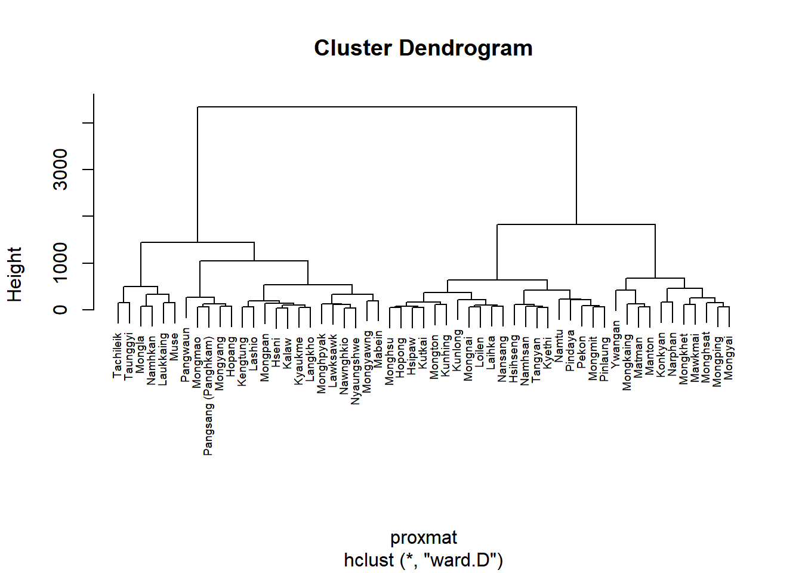
Selecting the optimal clustering algorithm
One of the challenge in performing hierarchical clustering is to identify stronger clustering structures. The issue can be solved by using use agnes() function of cluster package. It functions like hclus(), however, with the agnes() function you can also get the agglomerative coefficient, which measures the amount of clustering structure found (values closer to 1 suggest strong clustering structure).
The code chunk below will be used to compute the agglomerative coefficients of all hierarchical clustering algorithms.
m <- c( "average", "single", "complete", "ward")
names(m) <- c( "average", "single", "complete", "ward")
ac <- function(x) {
agnes(shan_ict, method = x)$ac
}
map_dbl(m, ac) average single complete ward
0.8131144 0.6628705 0.8950702 0.9427730 With reference to the output above, we can see that Ward’s method provides the strongest clustering structure among the four methods assessed. Hence, in the subsequent analysis, only Ward’s method will be used.
Note
The higher the coeff of the hierarchical clustering algorithm, the better it is to use for the dataset/scenario itself :D
determining optimal Clusters
Another technical challenge face by data analyst in performing clustering analysis is to determine the optimal clusters to retain.
There are three commonly used methods to determine the optimal clusters, they are:
Gap Statistic Method
The gap statistic compares the total within intra-cluster variation for different values of k with their expected values under null reference distribution of the data. The estimate of the optimal clusters will be value that maximize the gap statistic (i.e., that yields the largest gap statistic). This means that the clustering structure is far away from the random uniform distribution of points.
To compute the gap statistic, clusGap() of cluster package will be used.
set.seed(12345)
gap_stat <- clusGap(shan_ict,
FUN = hcut,
nstart = 25,
K.max = 10,
B = 50)
# Print the result
print(gap_stat, method = "firstmax")Clustering Gap statistic ["clusGap"] from call:
clusGap(x = shan_ict, FUNcluster = hcut, K.max = 10, B = 50, nstart = 25)
B=50 simulated reference sets, k = 1..10; spaceH0="scaledPCA"
--> Number of clusters (method 'firstmax'): 1
logW E.logW gap SE.sim
[1,] 8.407129 8.680794 0.2736651 0.04460994
[2,] 8.130029 8.350712 0.2206824 0.03880130
[3,] 7.992265 8.202550 0.2102844 0.03362652
[4,] 7.862224 8.080655 0.2184311 0.03784781
[5,] 7.756461 7.978022 0.2215615 0.03897071
[6,] 7.665594 7.887777 0.2221833 0.03973087
[7,] 7.590919 7.806333 0.2154145 0.04054939
[8,] 7.526680 7.731619 0.2049390 0.04198644
[9,] 7.458024 7.660795 0.2027705 0.04421874
[10,] 7.377412 7.593858 0.2164465 0.04540947Also note that the hcut function used is from factoextra package.
Next, we can visualise the plot by using fviz_gap_stat() of factoextra package.
fviz_gap_stat(gap_stat)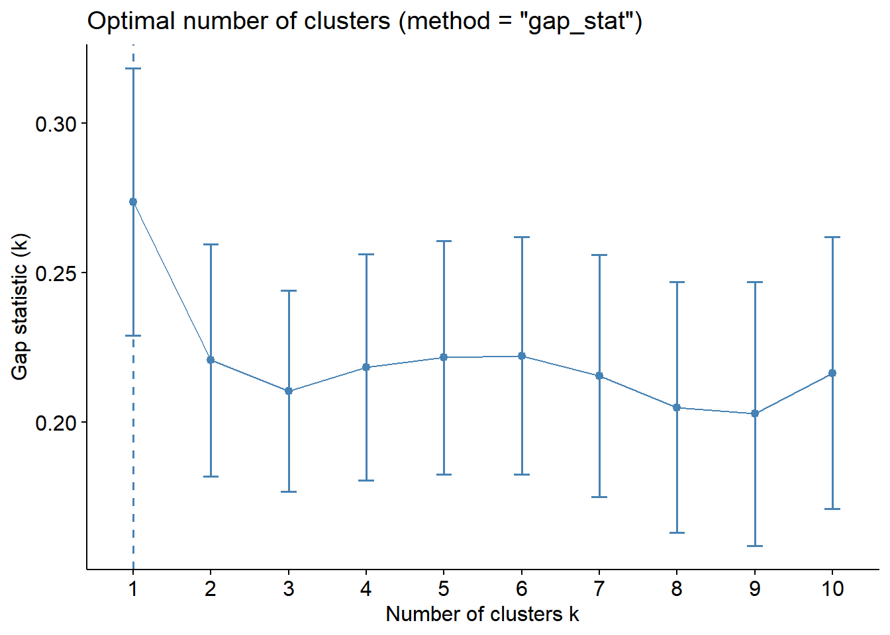
With reference to the gap statistic graph above, the recommended number of cluster to retain is 1. However, it is not logical to retain only one cluster. By examine the gap statistic graph, the 6-cluster gives the largest gap statistic and should be the next best cluster to pick.
Note
Note: In addition to these commonly used approaches, the NbClust package, published by Charrad et al., 2014, provides 30 indices for determining the relevant number of clusters and proposes to users the best clustering scheme from the different results obtained by varying all combinations of number of clusters, distance measures, and clustering methods.
Interpreting the Dendograms
In the dendrogram displayed above, each leaf corresponds to one observation. As we move up the tree, observations that are similar to each other are combined into branches, which are themselves fused at a higher height.
The height of the fusion, provided on the vertical axis, indicates the (dis)similarity between two observations. The higher the height of the fusion, the less similar the observations are. Note that, conclusions about the proximity of two observations can be drawn only based on the height where branches containing those two observations first are fused. We cannot use the proximity of two observations along the horizontal axis as a criteria of their similarity.
It’s also possible to draw the dendrogram with a border around the selected clusters by using rect.hclust() of R stats. The argument border is used to specify the border colors for the rectangles.
plot(hclust_ward, cex = 0.6)
rect.hclust(hclust_ward,
k = 6,
border = 2:5)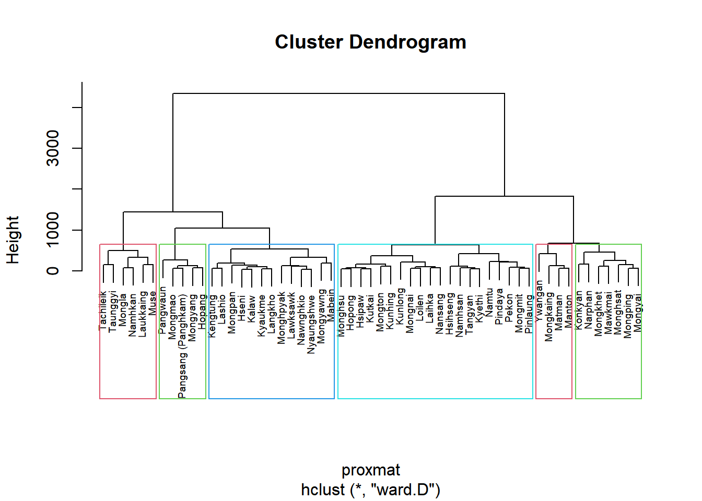
Visually-driven hierarchical clustering analysis
In this section, we will learn how to perform visually-driven hiearchical clustering analysis by using heatmaply package.
With heatmaply, we are able to build both highly interactive cluster heatmap or static cluster heatmap.
Transforming Data frame into matrix
The data was loaded into a data frame, but it has to be a data matrix to make your heatmap.
The code chunk below will be used to transform shan_ict data frame into a data matrix.
shan_ict_mat <- data.matrix(shan_ict)Plotting interactive cluster heatmap using heatmaply()
In the code chunk below, the heatmaply() of heatmaply package is used to build an interactive cluster heatmap.
heatmaply(normalize(shan_ict_mat),
Colv=NA,
dist_method = "euclidean",
hclust_method = "ward.D",
seriate = "OLO",
colors = Blues,
k_row = 6,
margins = c(NA,200,60,NA),
fontsize_row = 4,
fontsize_col = 5,
main="Geographic Segmentation of Shan State by ICT indicators",
xlab = "ICT Indicators",
ylab = "Townships of Shan State"
)Mapping the Clusters formed
With closed examination of the dendragram above, we have decided to retain six clusters.
cutree() of R Base will be used in the code chunk below to derive a 6-cluster model.
groups <- as.factor(cutree(hclust_ward, k=6))The output is called groups. It is a list object.
In order to visualise the clusters, the groups object need to be appended onto shan_sf simple feature object.
The code chunk below form the join in three steps:
the groups list object will be converted into a matrix;
cbind() is used to append groups matrix onto shan_sf to produce an output simple feature object called
shan_sf_cluster; andrename of dplyr package is used to rename as.matrix.groups field as CLUSTER.
shan_sf_cluster <- cbind(shan_sf, as.matrix(groups)) %>%
rename(`CLUSTER`=`as.matrix.groups.`)Next, qtm() of tmap package is used to plot the choropleth map showing the cluster formed
qtm(shan_sf_cluster, "CLUSTER")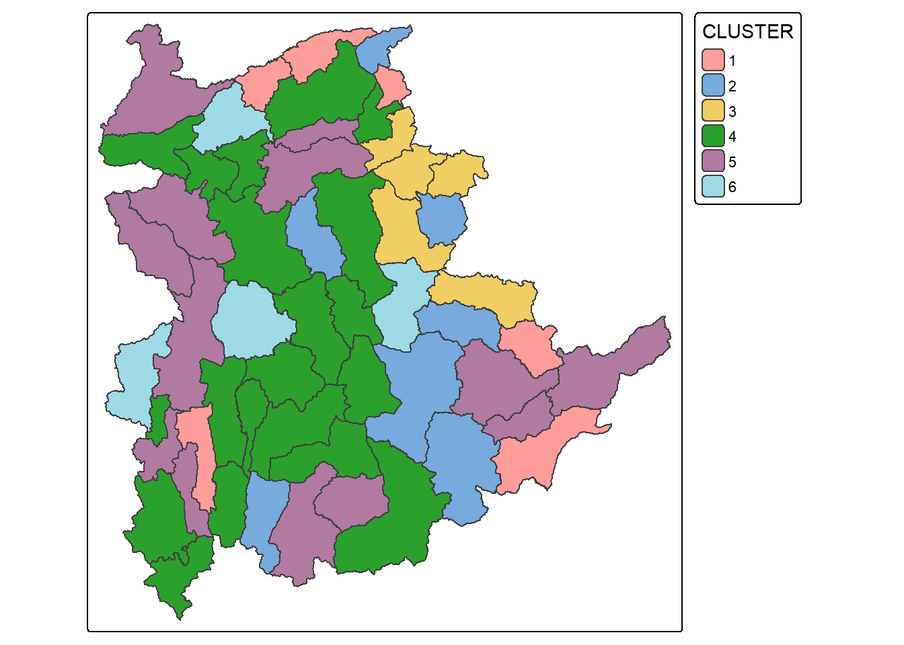
The choropleth map above reveals the clusters are very fragmented. The is one of the major limitation when non-spatial clustering algorithm such as hierarchical cluster analysis method is used.
Spatially Constrained Clustering: SKATER approach
In this section, you will learn how to derive spatially constrained cluster by using skater() method of spdep package.
Converting into SpatialPolygonsDataFrame
First, we need to convert shan_sf into SpatialPolygonsDataFrame. This is because SKATER function only support sp objects such as SpatialPolygonDataFrame.
The code chunk below uses as_Spatial() of sf package to convert shan_sf into a SpatialPolygonDataFrame called shan_sp.
shan_sp <- as_Spatial(shan_sf)Computing Neighbour List
Next, poly2nd() of spdep package will be used to compute the neighbours list from polygon list.
shan.nb <- poly2nb(shan_sp)
summary(shan.nb)Neighbour list object:
Number of regions: 55
Number of nonzero links: 264
Percentage nonzero weights: 8.727273
Average number of links: 4.8
Link number distribution:
2 3 4 5 6 7 8 9
5 8 9 19 5 4 4 1
5 least connected regions:
15 21 28 36 54 with 2 links
1 most connected region:
52 with 9 linksWe can plot the neighbours list on shan_sp by using the code chunk below. Since we now can plot the community area boundaries as well, we plot this graph on top of the map. The first plot command gives the boundaries. This is followed by the plot of the neighbor list object, with coordinates applied to the original SpatialPolygonDataFrame (Shan state township boundaries) to extract the centroids of the polygons. These are used as the nodes for the graph representation. We also set the color to blue and specify add=TRUE to plot the network on top of the boundaries.
coords <- st_coordinates(
st_centroid(st_geometry(shan_sf)))plot(st_geometry(shan_sf),
border=grey(.5))
plot(shan.nb,
coords,
col="blue",
add=TRUE)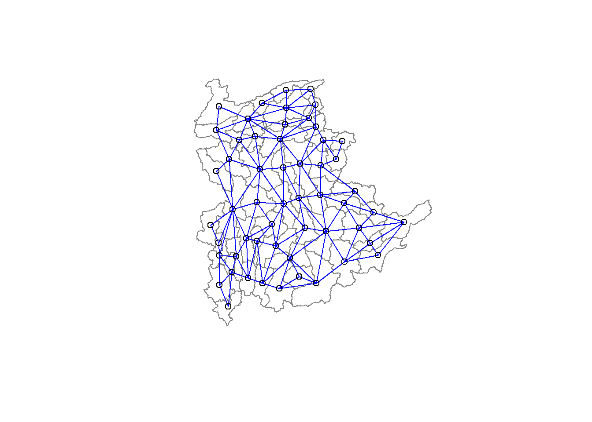
Note that if you plot the network first and then the boundaries, some of the areas will be clipped. This is because the plotting area is determined by the characteristics of the first plot. In this example, because the boundary map extends further than the graph, we plot it first.
Computing minimum spanning tree
Calculating Edge costs is required to compute the minimum spanning tree.
So, nbcosts() of spdep package is used to compute the cost of each edge. It is the distance between it nodes. This function compute this distance using a data.frame with observations vector in each node.
The code chunk below is used to compute the cost of each edge.
lcosts <- nbcosts(shan.nb, shan_ict)For each observation, this gives the pairwise dissimilarity between its values on the five variables and the values for the neighbouring observation (from the neighbour list). Basically, this is the notion of a generalised weight for a spatial weights matrix.
Next, We will incorporate these costs into a weights object in the same way as we did in the calculation of inverse of distance weights. In other words, we convert the neighbour list to a list weights object by specifying the just computed lcosts as the weights.
In order to achieve this, nb2listw() of spdep package is used as shown in the code chunk below.
Note that we specify the style as B to make sure the cost values are not row-standardised
shan.w <- nb2listw(shan.nb,
lcosts,
style="B")
summary(shan.w)Characteristics of weights list object:
Neighbour list object:
Number of regions: 55
Number of nonzero links: 264
Percentage nonzero weights: 8.727273
Average number of links: 4.8
Link number distribution:
2 3 4 5 6 7 8 9
5 8 9 19 5 4 4 1
5 least connected regions:
15 21 28 36 54 with 2 links
1 most connected region:
52 with 9 links
Weights style: B
Weights constants summary:
n nn S0 S1 S2
B 55 3025 76338.3 58090482 524376272Computing minimum spanning tree
The minimum spanning tree is computed by mean of the mstree() of spdep package as shown in the code chunk below.
shan.mst <- mstree(shan.w)
class(shan.mst)[1] "mst" "matrix"dim(shan.mst)[1] 54 3
Tip
After computing the MST, it is good to check its class and dimension before proceeding on!
Note that the dimension is 54 and not 55. This is because the minimum spanning tree consists on n-1 edges (links) in order to traverse all the nodes.
We can display the content of shan.mst by using head() as shown in the code chunk below.
head(shan.mst) [,1] [,2] [,3]
[1,] 54 50 94.61225
[2,] 50 53 138.12050
[3,] 53 51 95.66782
[4,] 51 52 140.01101
[5,] 52 21 90.82891
[6,] 21 19 157.04230The plot method for the MST include a way to show the observation numbers of the nodes in addition to the edge. As before, we plot this together with the township boundaries. We can see how the initial neighbour list is simplified to just one edge connecting each of the nodes, while passing through all the nodes.
plot(st_geometry(shan_sf),
border=gray(.5))
plot.mst(shan.mst,
coords,
col="blue",
cex.lab=0.7,
cex.circles=0.005,
add=TRUE)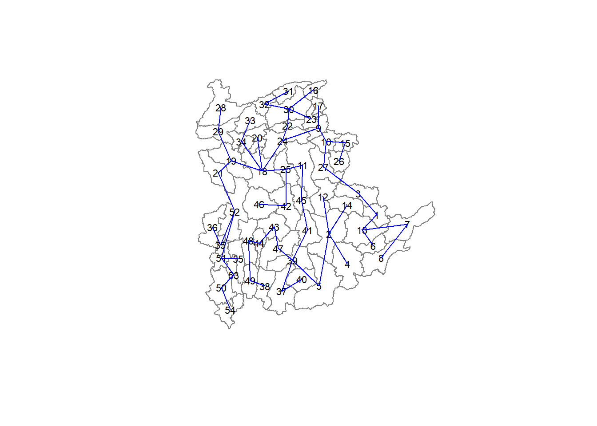
Computing spatially constrained clusters using SKATER method
The code chunk below compute the spatially constrained cluster using skater() of spdep package.
clust6 <- spdep::skater(edges = shan.mst[,1:2],
data = shan_ict,
method = "euclidean",
ncuts = 5)The skater() takes three mandatory arguments: - the first two columns of the MST matrix (i.e. not the cost), - the data matrix (to update the costs as units are being grouped), and - the number of cuts. Note: It is set to one less than the number of clusters. So, the value specified is not the number of clusters, but the number of cuts in the graph, one less than the number of clusters.
The result of the skater() is an object of class skater. We can examine its contents by using the code chunk below.
str(clust6)List of 8
$ groups : num [1:55] 2 3 2 3 3 2 2 2 2 2 ...
$ edges.groups:List of 6
..$ :List of 3
.. ..$ node: num [1:11] 35 51 52 29 50 54 53 21 19 55 ...
.. ..$ edge: num [1:10, 1:3] 51 29 52 50 54 53 51 21 19 52 ...
.. ..$ ssw : num 1458
..$ :List of 3
.. ..$ node: num [1:18] 15 10 7 1 32 30 9 3 13 27 ...
.. ..$ edge: num [1:17, 1:3] 7 30 32 1 9 3 30 13 10 30 ...
.. ..$ ssw : num 3759
..$ :List of 3
.. ..$ node: num [1:22] 39 42 11 34 25 45 49 2 5 18 ...
.. ..$ edge: num [1:21, 1:3] 42 34 11 49 2 25 5 45 18 39 ...
.. ..$ ssw : num 3423
..$ :List of 3
.. ..$ node: num [1:2] 37 40
.. ..$ edge: num [1, 1:3] 37 40 95
.. ..$ ssw : num 95
..$ :List of 3
.. ..$ node: num 26
.. ..$ edge: num[0 , 1:3]
.. ..$ ssw : num 0
..$ :List of 3
.. ..$ node: num 36
.. ..$ edge: num[0 , 1:3]
.. ..$ ssw : num 0
$ not.prune : NULL
$ candidates : int [1:6] 1 2 3 4 5 6
$ ssto : num 12613
$ ssw : num [1:6] 12613 10977 9962 9540 9123 ...
$ crit : num [1:2] 1 Inf
$ vec.crit : num [1:55] 1 1 1 1 1 1 1 1 1 1 ...
- attr(*, "class")= chr "skater"The most interesting component of this list structure is the groups vector containing the labels of the cluster to which each observation belongs (as before, the label itself is arbitary). This is followed by a detailed summary for each of the clusters in the edges.groups list. Sum of squares measures are given as ssto for the total and ssw to show the effect of each of the cuts on the overall criterion.
We can check the cluster assignment by using the conde chunk below.
ccs6 <- clust6$groups
ccs6 [1] 2 3 2 3 3 2 2 2 2 2 3 3 2 3 2 2 2 3 1 3 1 2 2 2 3 5 2 1 1 2 2 2 3 3 1 6 4 3
[39] 3 4 3 3 3 3 3 3 3 3 3 1 1 1 1 1 1We can find out how many observations are in each cluster by means of the table command. Parenthetially, we can also find this as the dimension of each vector in the lists contained in edges.groups. For example, the first list has node with dimension 12, which is also the number of observations in the first cluster.
table(ccs6)ccs6
1 2 3 4 5 6
11 18 22 2 1 1 Lastly, we can also plot the pruned tree that shows the five clusters on top of the townshop area.
plot(st_geometry(shan_sf),
border=gray(.5))
plot(clust6,
coords,
cex.lab=.7,
groups.colors=c("red","green","blue", "brown", "pink"),
cex.circles=0.005,
add=TRUE)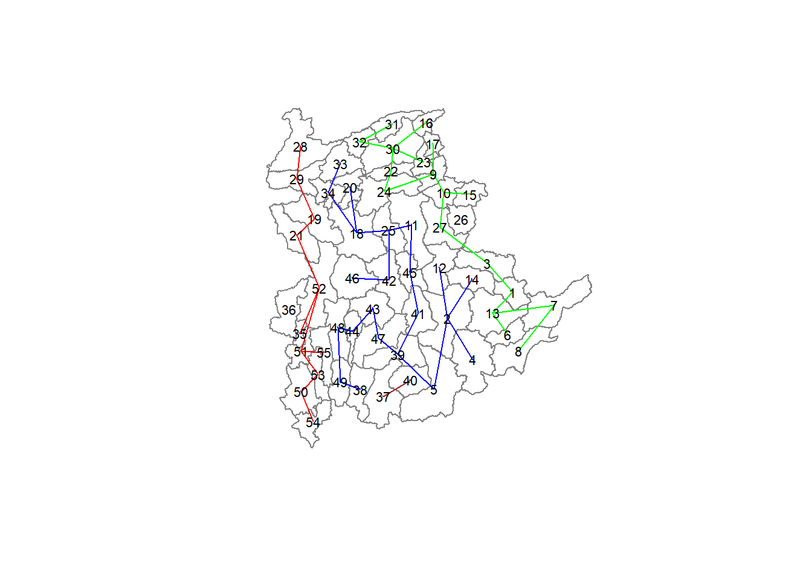
Visualising the clusters in choropleth map
The code chunk below is used to plot the newly derived clusters by using SKATER method.
groups_mat <- as.matrix(clust6$groups)
shan_sf_spatialcluster <- cbind(shan_sf_cluster, as.factor(groups_mat)) %>%
rename(`SP_CLUSTER`=`as.factor.groups_mat.`)
qtm(shan_sf_spatialcluster, "SP_CLUSTER")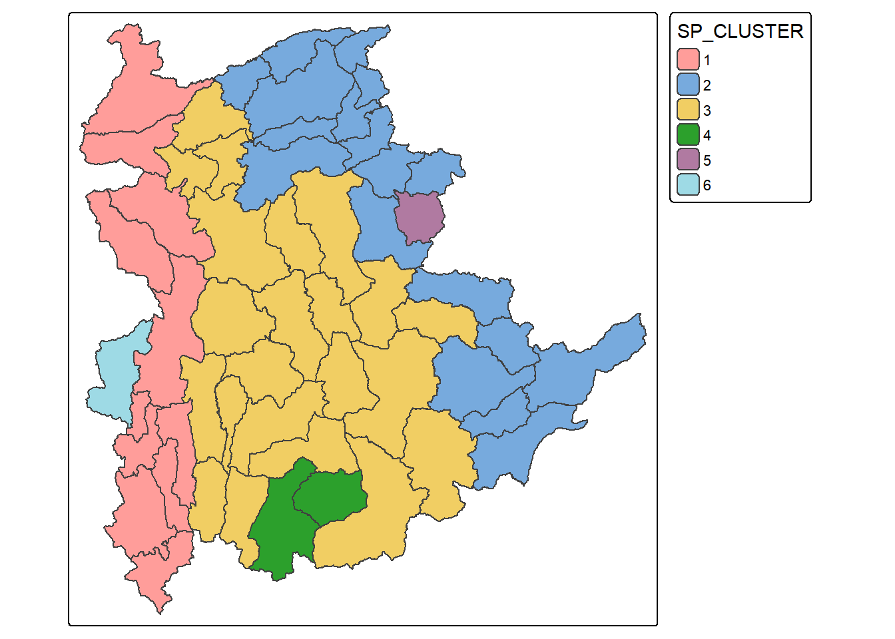
For easy comparison, it will be better to place both the hierarchical clustering and spatially constrained hierarchical clustering maps next to each other.
hclust.map <- qtm(shan_sf_cluster,
"CLUSTER") +
tm_borders(alpha = 0.5)
shclust.map <- qtm(shan_sf_spatialcluster,
"SP_CLUSTER") +
tm_borders(alpha = 0.5)
tmap_arrange(hclust.map, shclust.map,
asp=NA, ncol=2)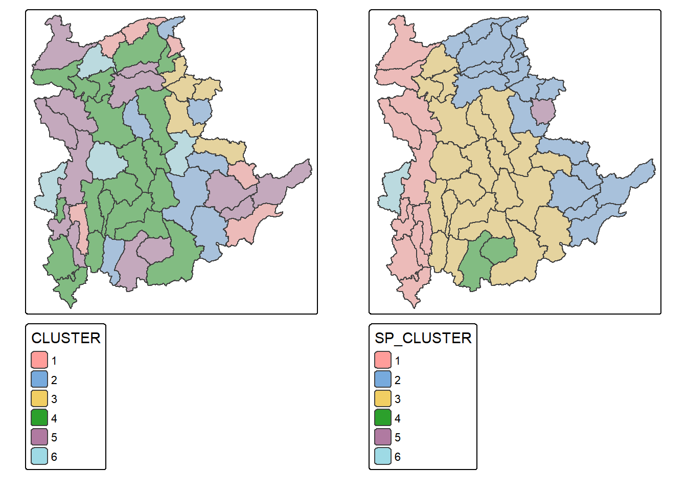
Spatially Constrained Clustering: ClustGeo Method
Functions provided by ClustGeo package will be used here to perform non-spatially constrained hierarchical cluster analysis and spatially constrained cluster analysis.
Introduction to ClustGeo
ClustGeo is an R package specially designed to support the need of performing spatially constrained cluster analysis. More specifically, it provides a Ward-like hierarchical clustering algorithm called hclustgeo() including spatial/geographical constraints.
In the nutshell, the algorithm uses two dissimilarity matrices D0 and D1 along with a mixing parameter alpha, whereby the value of alpha must be a real number between [0, 1]. D0 can be non-Euclidean and the weights of the observations can be non-uniform. It gives the dissimilarities in the attribute/clustering variable space. D1, on the other hand, gives the dissimilarities in the constraint space. The criterion minimised at each stage is a convex combination of the homogeneity criterion calculated with D0 and the homogeneity criterion calculated with D1.
The idea is then to determine a value of alpha which increases the spatial contiguity without deteriorating too much the quality of the solution based on the variables of interest. This need is supported by a function called choicealpha().
Ward-like hierarchical clustering: ClustGeo
ClustGeo package provides function called hclustgeo() to perform a typical Ward-like hierarchical clustering just like hclust() you learned in previous section.
To perform non-spatially constrained hierarchical clustering, we only need to provide the function a dissimilarity matrix as shown in the code chunk below.
nongeo_cluster <- hclustgeo(proxmat)
plot(nongeo_cluster, cex = 0.5)
rect.hclust(nongeo_cluster,
k = 6,
border = 2:5)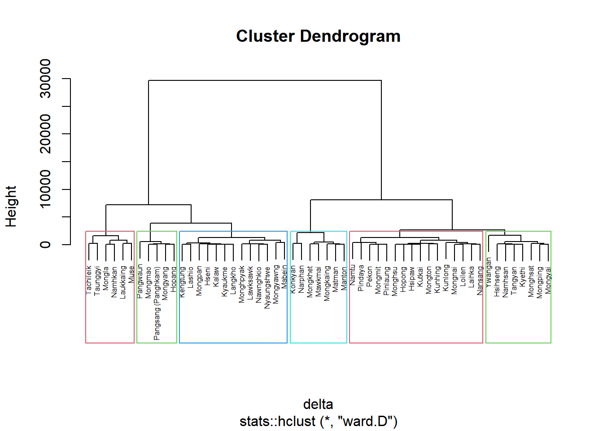
Note
the dissimilarity matrix must be an object of class dist, i.e. an object obtained with the function dist(). For sample code chunk, please refer to 5.7.6 Computing proximity matrix
Mapping out clusters
Similarly, we can plot the clusters on a categorical area shaded map by using the steps we learned in 5.7.12 Mapping the clusters formed.
groups <- as.factor(cutree(nongeo_cluster, k=6))
shan_sf_ngeo_cluster <- cbind(shan_sf, as.matrix(groups)) %>%
rename(`CLUSTER` = `as.matrix.groups.`)
qtm(shan_sf_ngeo_cluster, "CLUSTER")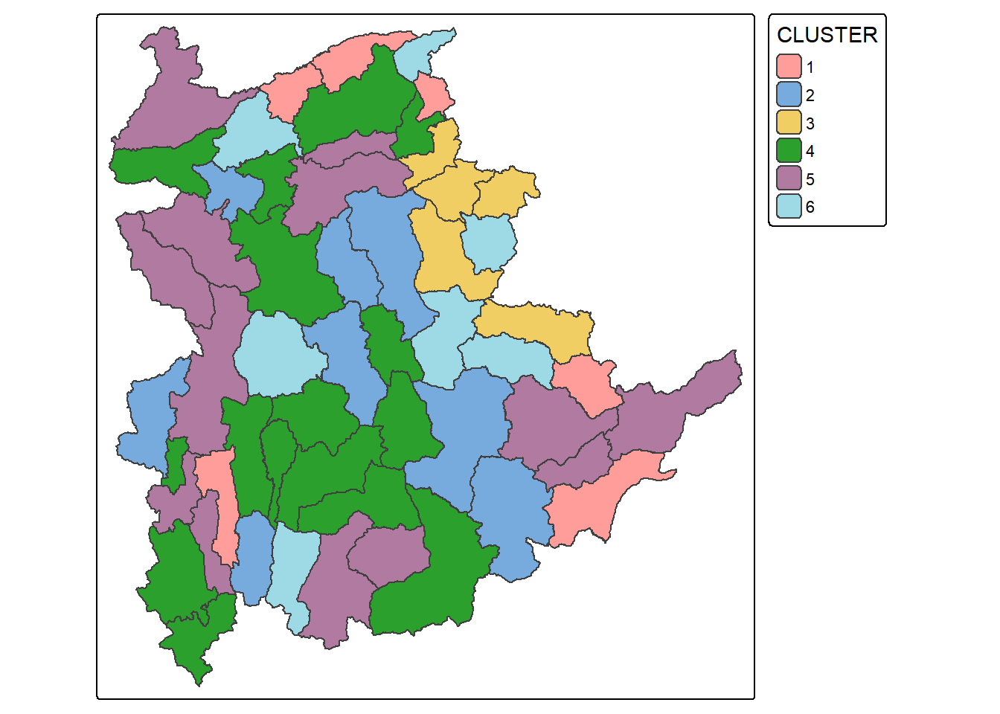
Spatially Constrained Hierarchical Clustering
Before we can performed spatially constrained hierarchical clustering, a spatial distance matrix will be derived by using st_distance() of sf package.
dist <- st_distance(shan_sf, shan_sf)
distmat <- as.dist(dist)Notice that as.dist() is used to convert the data frame into matrix.
Next, choicealpha() will be used to determine a suitable value for the mixing parameter alpha as shown in the code chunk below.
cr <- choicealpha(proxmat, distmat, range.alpha = seq(0, 1, 0.1), K=6, graph = TRUE)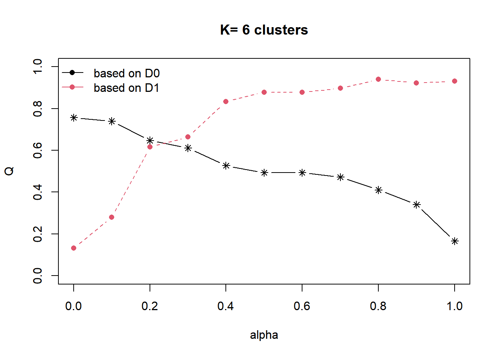
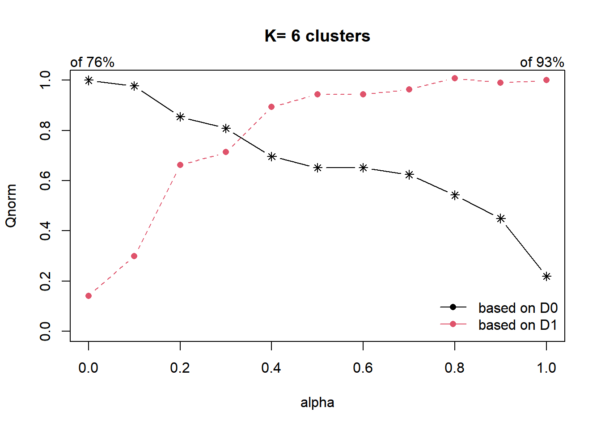
With reference to the graphs above, alpha = 0.2 will be used as shown in the code chunk below.
clustG <- hclustgeo(proxmat, distmat, alpha = 0.2)Next, cutree() is used to derive the cluster objecct.
groups <- as.factor(cutree(clustG, k=6))We will then join back the group list with shan_sf polygon feature data frame and plot out visual by using the code chunk below.
shan_sf_Gcluster <- cbind(shan_sf, as.matrix(groups)) %>%
rename(`CLUSTER` = `as.matrix.groups.`)
qtm(shan_sf_Gcluster, "CLUSTER")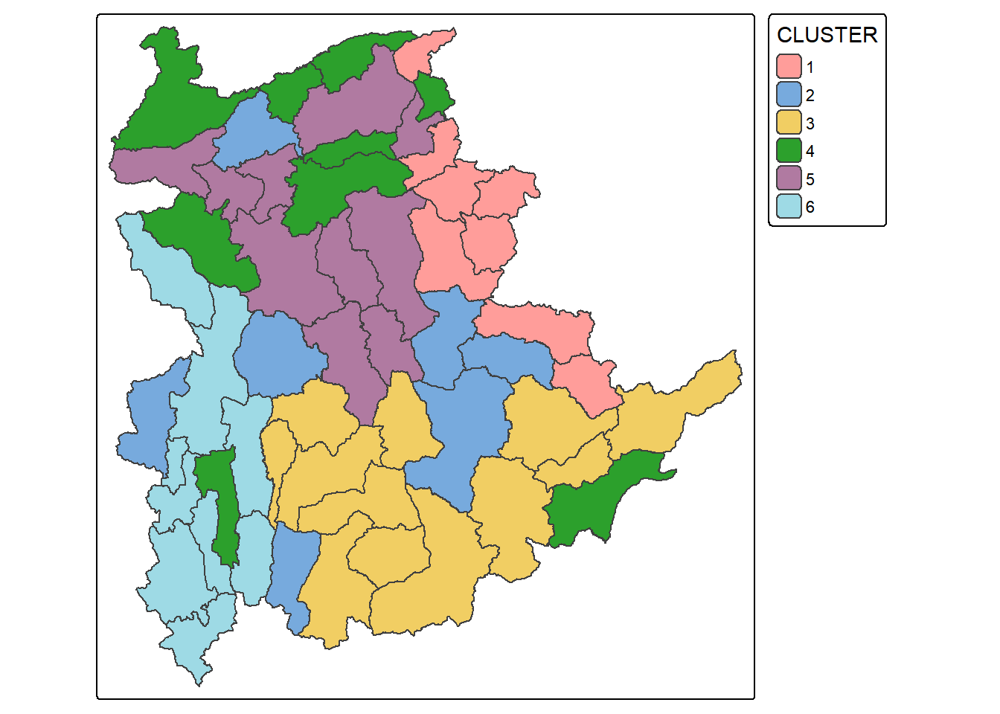
Visual Interpretation of Clusters
Visualising individual clustering variable
Code chunk below is used to reveal the distribution of a clustering variable (i.e RADIO_PR) by cluster.
ggplot(data = shan_sf_ngeo_cluster,
aes(x = CLUSTER, y = RADIO_PR)) +
geom_boxplot()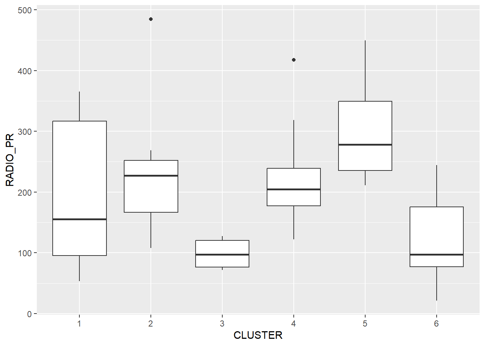
The boxplot reveals Cluster 3 displays the highest mean Radio Ownership Per Thousand Household. This is followed by Cluster 2, 1, 4, 6 and 5.
Multivariate Visualisation
Past studies shown that parallel coordinate plot can be used to reveal clustering variables by cluster very effectively. In the code chunk below, ggparcoord() of GGally package
ggparcoord(data = shan_sf_ngeo_cluster,
columns = c(17:21),
scale = "globalminmax",
alphaLines = 0.2,
boxplot = TRUE,
title = "Multiple Parallel Coordinates Plots of ICT Variables by Cluster") +
facet_grid(~ CLUSTER) +
theme(axis.text.x = element_text(angle = 30))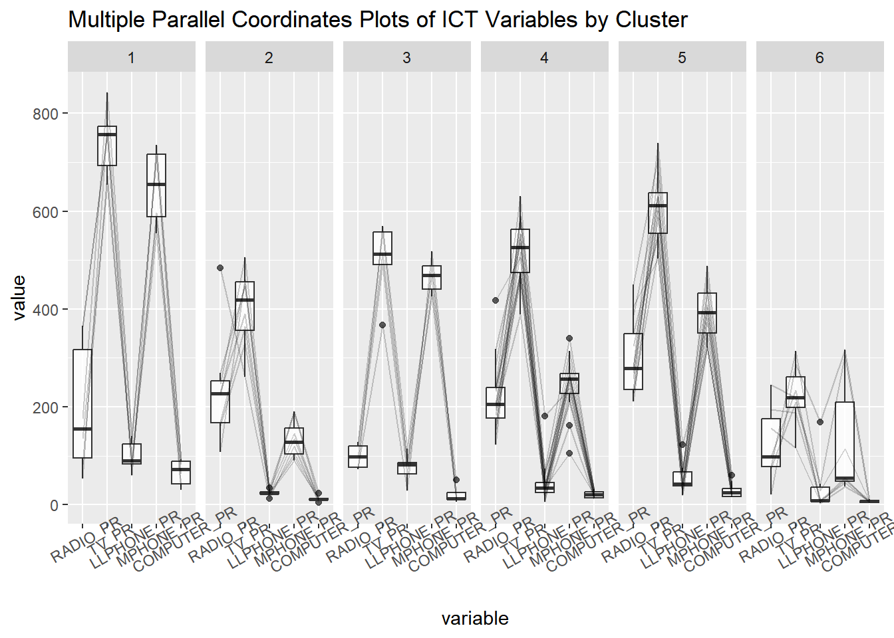
The parallel coordinate plot above reveals that households in Cluster 4 townships tend to own the highest number of TV and mobile-phone. On the other hand, households in Cluster 5 tends to own the lowest of all the five ICT.
Note that the scale argument of ggparcoor() provide several methods to scale the clustering variables. They are:
std: univariately, subtract mean and divide by standard deviation.
robust: univariately, subtract median and divide by median absolute deviation.
uniminmax: univariately, scale so the minimum of the variable is zero, and the maximum is one.
globalminmax: no scaling is done; the range of the graphs is defined by the global minimum and the global maximum.
center: use uniminmax to standardize vertical height, then center each variable at a value specified by the scaleSummary param.
centerObs: use uniminmax to standardize vertical height, then center each variable at the value of the observation specified by the centerObsID param
There is no one best scaling method to use. You should explore them and select the one that best meet your analysis need.
Last but not least, we can also compute the summary statistics such as mean, median, sd, etc to complement the visual interpretation.
In the code chunk below, group_by() and summarise() of dplyr are used to derive mean values of the clustering variables.
shan_sf_ngeo_cluster %>%
st_set_geometry(NULL) %>%
group_by(CLUSTER) %>%
summarise(mean_RADIO_PR = mean(RADIO_PR),
mean_TV_PR = mean(TV_PR),
mean_LLPHONE_PR = mean(LLPHONE_PR),
mean_MPHONE_PR = mean(MPHONE_PR),
mean_COMPUTER_PR = mean(COMPUTER_PR))# A tibble: 6 × 6
CLUSTER mean_RADIO_PR mean_TV_PR mean_LLPHONE_PR mean_MPHONE_PR
<chr> <dbl> <dbl> <dbl> <dbl>
1 1 196. 744. 99.0 651.
2 2 237. 402. 23.9 134.
3 3 98.6 499. 74.5 468.
4 4 221. 521. 44.2 246.
5 5 300. 611. 52.2 392.
6 6 124. 224. 38.0 132.
# ℹ 1 more variable: mean_COMPUTER_PR <dbl>Examples
importing of data
hunan <- st_read("data/geospatial/hunan/Hunan.shp") %>%
st_transform(crs = 32650)Reading layer `Hunan' from data source
`C:\cjmheidii\ISSS626 - Geospatial\Hands-on_Ex\data\geospatial\hunan\Hunan.shp'
using driver `ESRI Shapefile'
Simple feature collection with 88 features and 7 fields
Geometry type: POLYGON
Dimension: XY
Bounding box: xmin: 108.7831 ymin: 24.6342 xmax: 114.2544 ymax: 30.12812
Geodetic CRS: WGS 84# Hunan_2012.csv has City = "Changsha" twice, once with a trailing space. So str_trim is done to ensure the issue is fixed.
hunan_2012 <- read_csv("data/aspatial/Hunan_2012.csv") %>%
mutate(City = str_trim(City)) Now we need to join the data, in which we need to figure out which columns to utilise for the join. And from looking in the environment tab “county” is determined as the best column to use. However at times, there may be rows with issues with joining (Without the County value in the row) in which the code chunk below will check for.
hunan_2012 %>%
anti_join(st_drop_geometry(hunan), by = "County")# A tibble: 0 × 29
# ℹ 29 variables: County <chr>, City <chr>, avg_wage <dbl>, deposite <dbl>,
# FAI <dbl>, Gov_Rev <dbl>, Gov_Exp <dbl>, GDP <dbl>, GDPPC <dbl>, GIO <dbl>,
# Loan <dbl>, NIPCR <dbl>, Bed <dbl>, Emp <dbl>, EmpR <dbl>, EmpRT <dbl>,
# Pri_Stu <dbl>, Sec_Stu <dbl>, Household <dbl>, Household_R <dbl>,
# NOIP <dbl>, Pop_R <dbl>, RSCG <dbl>, Pop_T <dbl>, Agri <dbl>,
# Service <dbl>, Disp_Inc <dbl>, RORP <dbl>, ROREmp <dbl>Since result is 0, we can move on with joining the files.
hunan <- left_join(hunan, hunan_2012, by = "County")Data engineering & EDA of data.
As in the Shan exercise, raw totals mostly reflect county size, so we will convert them to per-capita measures. Counties with larger populations will naturally have larger deposits, investment, etc..
hunan_derived <- hunan %>%
mutate(DEPOSIT_PC = deposite / Pop_T,
LOAN_PC = Loan / Pop_T,
FAI_PC = FAI / Pop_T,
GIO_PC = GIO / Pop_T,
RSCG_PC = RSCG / Pop_T,
GOVREV_PC = Gov_Rev / Pop_T,
BED_PC = Bed / Pop_T)
hunan_derived %>%
st_drop_geometry() %>%
select(GDPPC, avg_wage, NIPCR, ends_with("_PC")) %>%
summary() GDPPC avg_wage NIPCR DEPOSIT_PC
Min. : 8497 Min. :26832 Min. : 2895 Min. : 1.378
1st Qu.:14566 1st Qu.:31480 1st Qu.: 3981 1st Qu.:10.496
Median :20433 Median :33070 Median : 6119 Median :12.190
Mean :24405 Mean :33465 Mean : 7095 Mean :13.036
3rd Qu.:27224 3rd Qu.:34247 3rd Qu.: 9768 3rd Qu.:14.341
Max. :88656 Max. :54540 Max. :17070 Max. :31.266
LOAN_PC FAI_PC GIO_PC RSCG_PC
Min. : 0.8747 Min. : 3.574 Min. : 1.758 Min. : 2.097
1st Qu.: 5.1195 1st Qu.: 8.227 1st Qu.: 10.856 1st Qu.: 4.502
Median : 6.3680 Median :11.233 Median : 20.276 Median : 5.943
Mean : 7.8957 Mean :15.450 Mean : 31.676 Mean : 6.824
3rd Qu.: 8.1167 3rd Qu.:17.896 3rd Qu.: 36.183 3rd Qu.: 8.395
Max. :40.5908 Max. :91.543 Max. :279.295 Max. :22.636
GOVREV_PC BED_PC
Min. :0.3871 Min. : 1.381
1st Qu.:0.6219 1st Qu.: 2.443
Median :0.8257 Median : 2.944
Mean :1.1262 Mean : 3.183
3rd Qu.:1.3060 3rd Qu.: 3.530
Max. :5.3575 Max. :12.361 EXAMPLE 1 : EDA using Hunan’s dataset
Now we will compare the raw total for the GDP as compared to the per-capita version
p1 <- ggplot(hunan_derived, aes(x = GIO)) +
geom_histogram(bins = 20, color = "black", fill = "light blue") +
ggtitle("Gross industrial output (raw)")
p2 <- ggplot(hunan_derived, aes(x = GIO_PC)) +
geom_histogram(bins = 20, color = "black", fill = "light blue") +
ggtitle("Gross industrial output per capita")
ggarrange(p1, p2, ncol = 2)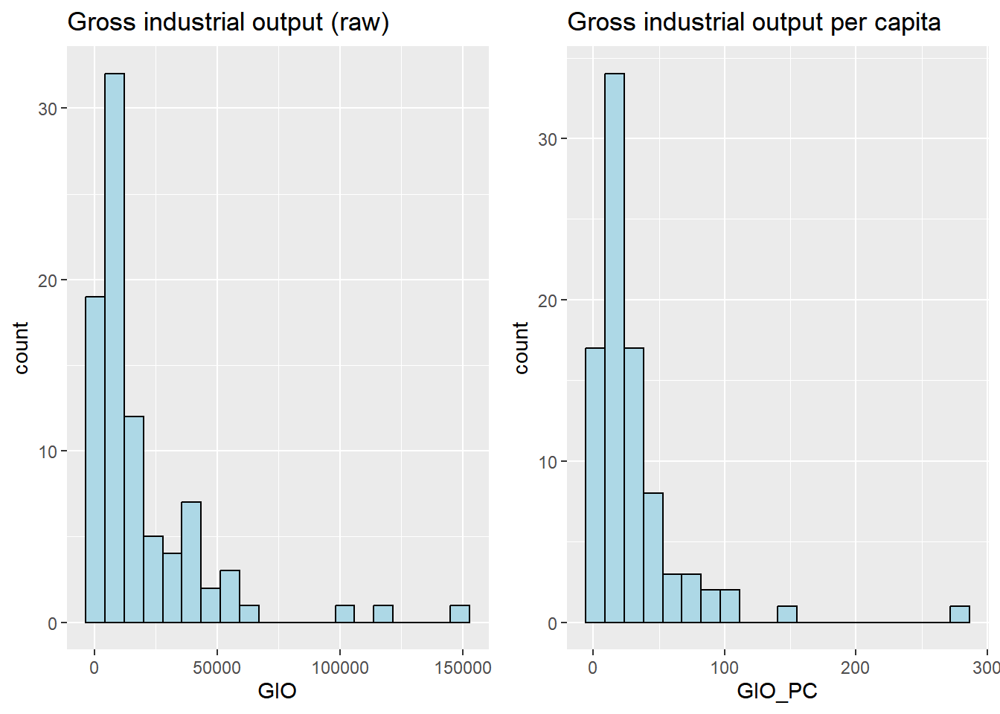
Note
Analysis :
Similar to the Myanmar example, both histograms are strongly right-skewed.
In this case most counties lies in the lowest bins at under ~15,000 for `GIO`, and under ~25 for `GIO_PC`, with a long tail from a handful of industrial counties with three above 100,000 in `GIO`, and one near 280 in `GIO_PC`.
However unlike `RADIO` vs `RADIO_PR` in the Shan exercise, where dividing by households gave an almost symmetric distribution, the per-capita version here is only slightly better.
So overall this suggests the skew reflects genuine concentration of industry in a few counties, and not just county size.
This is the reason why these EDA plots and data engineering has to be done even though it seems simple to do to ensure accuracy in the analysis. We will never know if the data is truly skewed unless these steps are done
b1 <- ggplot(hunan_derived, aes(x = GIO)) +
geom_boxplot(color = "black", fill = "light blue")
b2 <- ggplot(hunan_derived, aes(x = GIO_PC)) +
geom_boxplot(color = "black", fill = "light blue")
ggarrange(b1, b2, ncol = 1)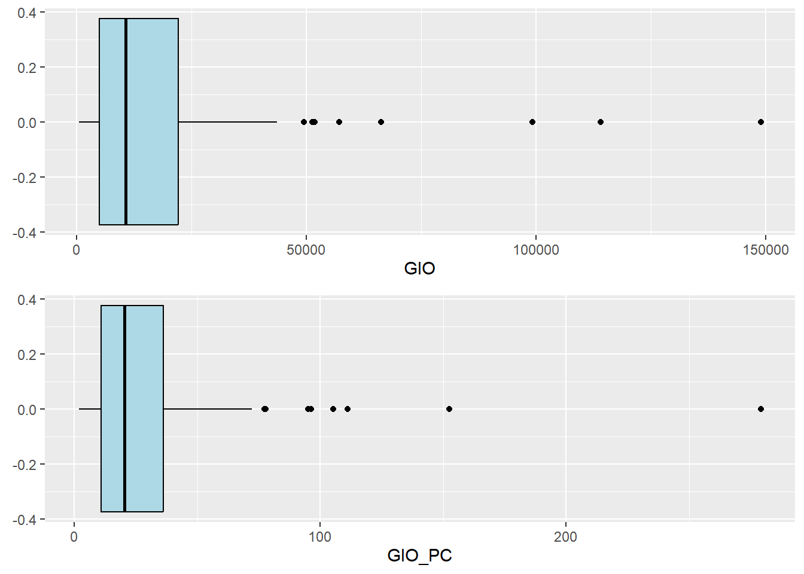
Note
Analysis :
Other than the usual :
GIO_PC`
median : ~20,
IQR : ~10–36
seven outliers, with one extreme county near 280.
GIO
median : ~11,000
IQR : ~5,000–22,000
eight outliers stretching to ~150,000.
In the initial exercise, normalising cut the outliers from three to one, because they were just the most populous townships. However the outlier count barely changes (about 8 to 7), so these counties are truly industry-intensive, not merely large (as again supporting the histogram visual thats just made).
EXAMPLE 2 : Correlation Analysis
So again before the correlation analysis is done we have to create the heatmap to check for highly correlated variables. These should be removed since not doing so would cause the curse of multicollinearity which will affect the overall accuracy of the data.
cand <- hunan_derived %>%
st_drop_geometry() %>%
select(GDPPC, avg_wage, NIPCR, DEPOSIT_PC, LOAN_PC,
FAI_PC, GIO_PC, RSCG_PC, GOVREV_PC, BED_PC)
corrplot.mixed(cor(cand),
lower = "ellipse",
upper = "number",
tl.pos = "lt",
diag = "l",
tl.col = "black")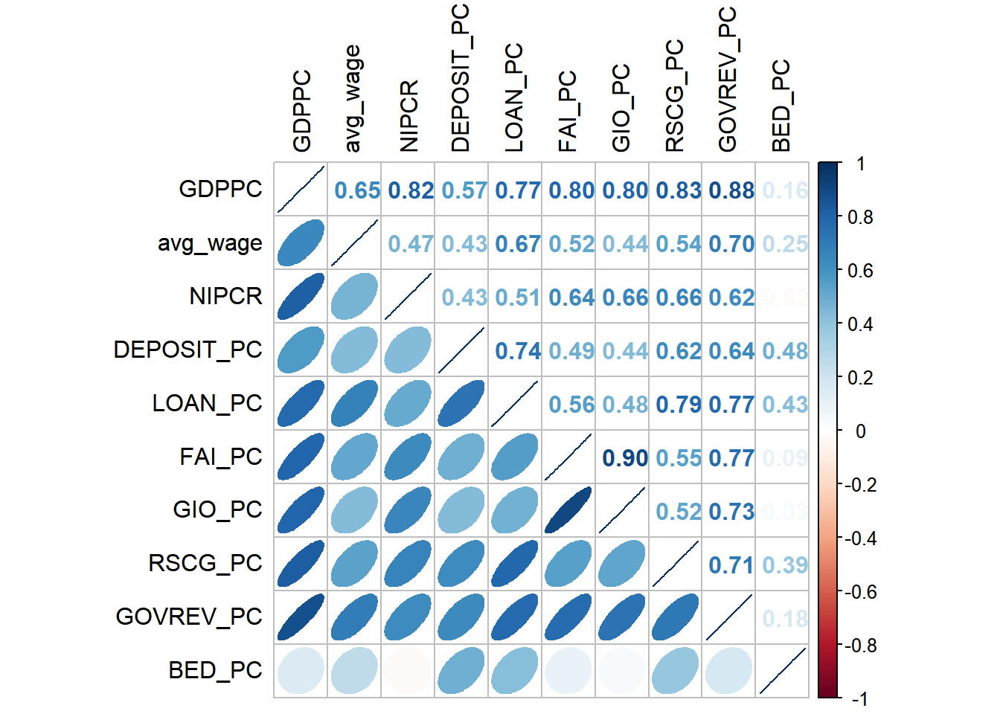
Note
From here, we can see that the several pairs exceed r = 0.8 (for example FAI_PC and GIO_PC at about 0.90, and GDPPC with GOVREV_PC, RSCG_PC and NIPCR).
So the code below will drop the highly correlated variables then run the analysis.
pacman::p_load(caret)
cor_full <- cor(cand)
# Flag variables to drop at |r| > 0.8
high_cor_idx <- findCorrelation(cor_full, cutoff = 0.8)
drop_vars <- colnames(cand)[high_cor_idx]
drop_vars[1] "GDPPC" "FAI_PC"# Drop the flagged variables
cand_reduced <- cand %>% select(-all_of(drop_vars))
names(cand_reduced)[1] "avg_wage" "NIPCR" "DEPOSIT_PC" "LOAN_PC" "GIO_PC"
[6] "RSCG_PC" "GOVREV_PC" "BED_PC" # Run correlation analysis on the reduced set
cor_reduced <- cor(cand_reduced)
corrplot.mixed(cor_reduced,
lower = "ellipse",
upper = "number",
tl.pos = "lt",
diag = "l",
tl.col = "black")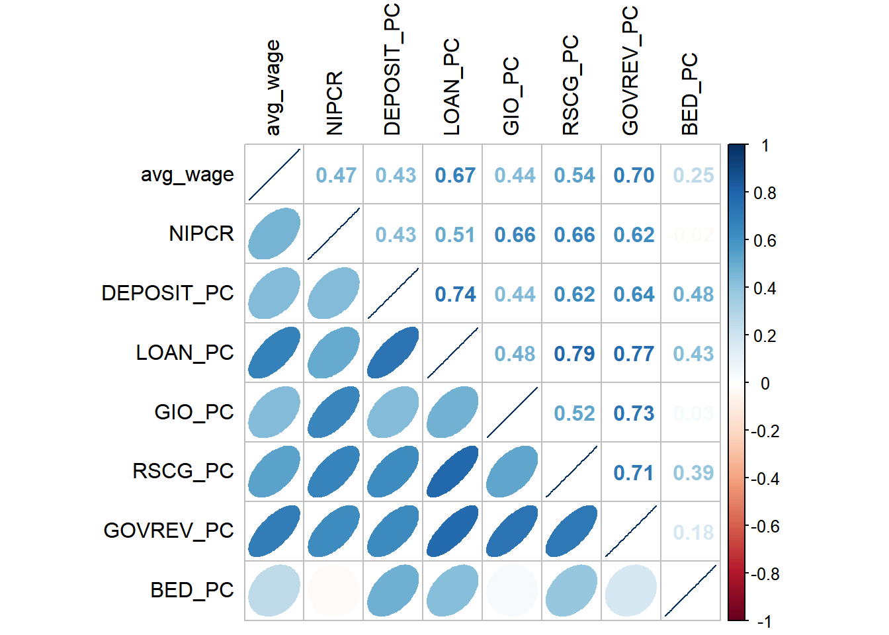
max(abs(cor_reduced[upper.tri(cor_reduced)]))[1] 0.78622
Note
Analysis:
After removing highly correlated variables (|r| > 0.8), the strongest remaining pairwise correlation is 0.79, so no pair exceeds the cutoff. This is still a strong relationship, so the remaining variables are not fully independent, but the overlap is small enough to keep them together in the clustering.
EXAMPLE 3 : Hierarchical Cluster Analysis
preparing Clustering Data
cluster_vars <- hunan_derived %>%
st_drop_geometry() %>%
select(County, avg_wage, NIPCR, DEPOSIT_PC, FAI_PC, BED_PC) %>%
column_to_rownames("County")
head(cluster_vars) avg_wage NIPCR DEPOSIT_PC FAI_PC BED_PC
Anxiang 31935 7693.7 10.443309 6.702631 3.655120
Hanshou 32265 8269.9 9.916729 10.769326 3.181705
Jinshi 28692 8169.9 18.195790 18.971406 3.367752
Li 32541 8377.0 16.200601 19.298498 2.448048
Linli 32667 8143.1 1.378207 19.010994 3.518202
Shimen 33261 6156.0 13.879101 17.537052 4.166528Standardisation
hunan_z <- scale(cluster_vars)
describe(hunan_z) vars n mean sd median trimmed mad min max range skew kurtosis
avg_wage 1 88 0 1 -0.10 -0.11 0.58 -1.66 5.27 6.93 2.12 7.87
NIPCR 2 88 0 1 -0.28 -0.11 1.08 -1.19 2.82 4.01 0.76 -0.18
DEPOSIT_PC 3 88 0 1 -0.18 -0.08 0.58 -2.54 3.96 6.50 1.19 3.30
FAI_PC 4 88 0 1 -0.35 -0.18 0.49 -0.99 6.36 7.35 3.47 17.12
BED_PC 5 88 0 1 -0.18 -0.12 0.62 -1.40 7.10 8.50 4.17 26.47
se
avg_wage 0.11
NIPCR 0.11
DEPOSIT_PC 0.11
FAI_PC 0.11
BED_PC 0.11Proximity matrix & Clustering
proxmat <- dist(hunan_z, method = "euclidean")
hclust_ward <- hclust(proxmat, method = "ward.D2")
plot(hclust_ward, cex = 0.5)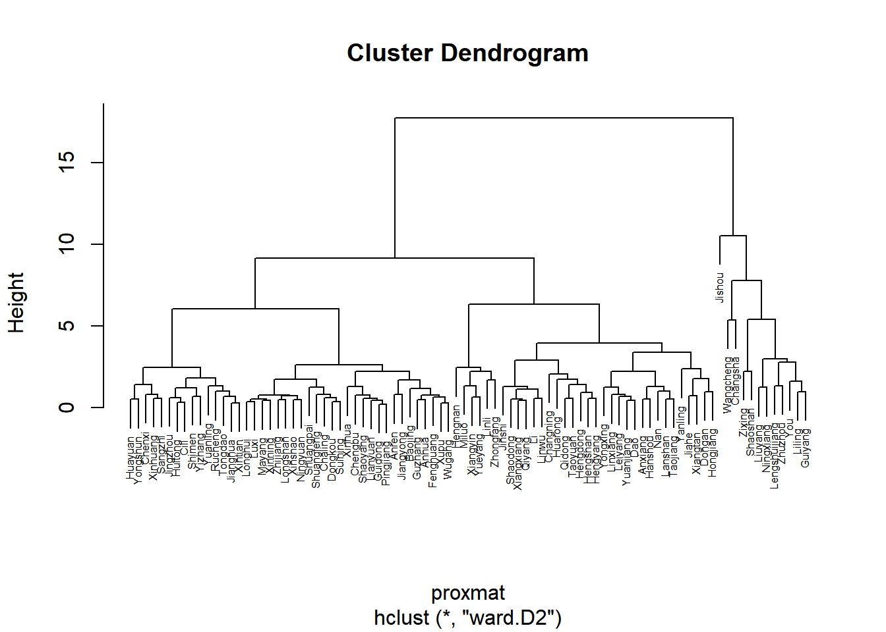
Selecting the clustering algorithm
Now we need to select the best clustering algorithm to use for our new example. For each different type of data will have a different optimal clustering algorithm!
m <- c("average", "single", "complete", "ward")
names(m) <- m
ac <- function(x) {
agnes(hunan_z, method = x)$ac
}
map_dbl(m, ac) average single complete ward
0.8843526 0.8754522 0.8986732 0.9409297
Note
For this case, similar to the initial Myanmar case, the Ward method is the best to use.
Number of clusters (optimal)
Now with the best clustering method we will look at how many clusters is the best for the analysis.
set.seed(12345)
gap_stat <- clusGap(hunan_z, FUN = hcut, nstart = 25, K.max = 10, B = 50)
print(gap_stat, method = "firstmax")Clustering Gap statistic ["clusGap"] from call:
clusGap(x = hunan_z, FUNcluster = hcut, K.max = 10, B = 50, nstart = 25)
B=50 simulated reference sets, k = 1..10; spaceH0="scaledPCA"
--> Number of clusters (method 'firstmax'): 2
logW E.logW gap SE.sim
[1,] 4.040574 4.821503 0.7809288 0.02951822
[2,] 3.846263 4.635473 0.7892100 0.02937352
[3,] 3.779748 4.499884 0.7201365 0.02832189
[4,] 3.627489 4.399910 0.7724210 0.02648293
[5,] 3.563192 4.332130 0.7689386 0.02655156
[6,] 3.487817 4.274174 0.7863569 0.02458495
[7,] 3.380377 4.222320 0.8419431 0.02506834
[8,] 3.325787 4.174157 0.8483701 0.02524225
[9,] 3.276167 4.128518 0.8523510 0.02571272
[10,] 3.220678 4.086097 0.8654186 0.02590550fviz_gap_stat(gap_stat)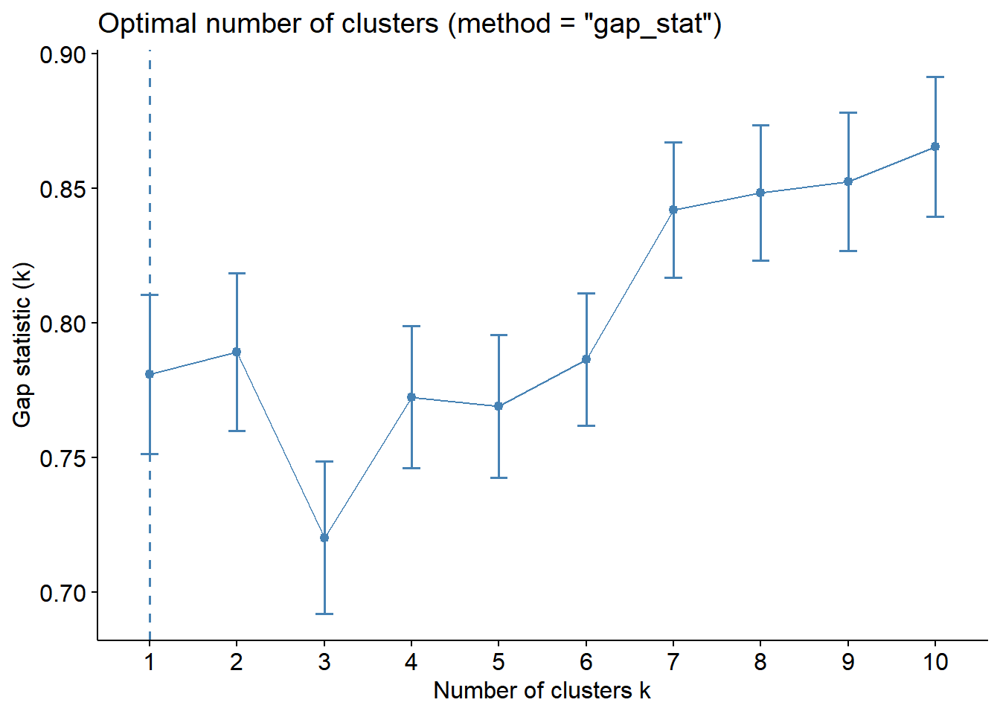
p_sil <- fviz_nbclust(hunan_z, hcut, method = "silhouette")
p_wss <- fviz_nbclust(hunan_z, hcut, method = "wss")
ggarrange(p_sil, p_wss, ncol = 2)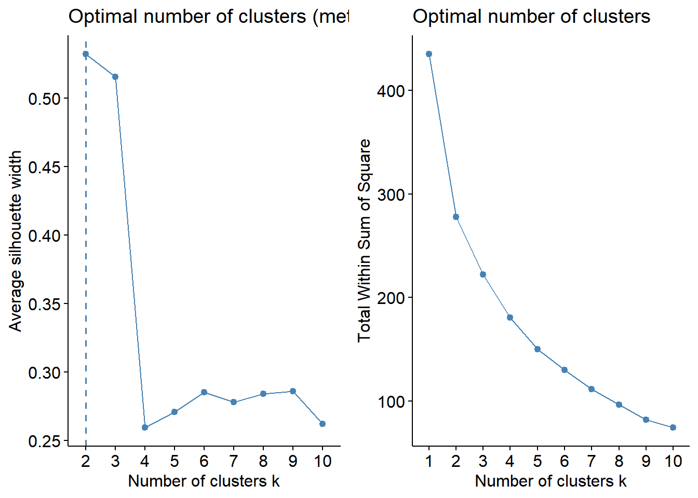
Note
The statistical criteria favour a very small k (silhouette peaks at k = 2 and drops sharply from k = 3 to k = 4).
it would be best to choose k = 4 because k = 3 already isolates a single county (Jishou, which has an extreme BED_PC), while k = 4 additionally splits the remaining counties into interpretable development tiers.
So now with the WARD clustering method used and k=4, we will do the final clustering!
k <- 4
plot(hclust_ward, cex = 0.5)
rect.hclust(hclust_ward, k = k, border = 2:5)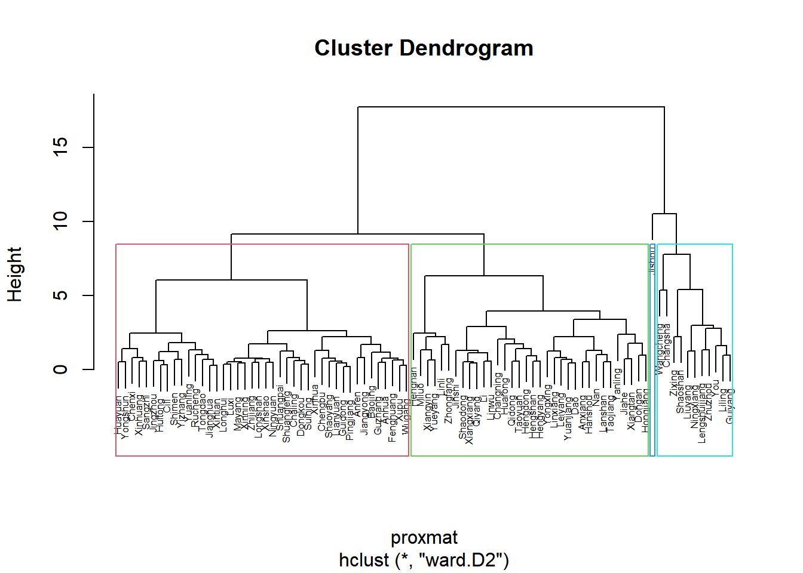